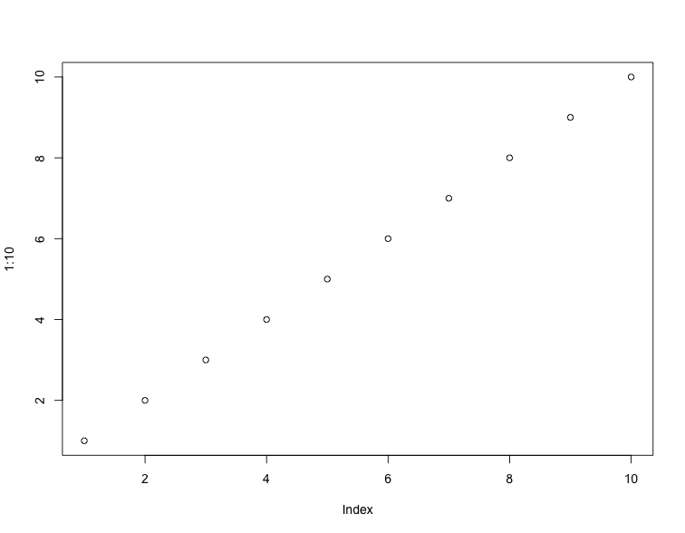

Rscript and R CMDRscript()options() and environment variableson.exit() in a parent function'\n'gsub() on elements matched from grep()remotes::install_github()cat()[0, 1) based on a linear congruential generatorrecord()R CMD check on the reverse dependencies of a packagesystem2() and mark its character output as UTF-8 if appropriatestr() into a tree diagramcurl
-- A --
alnum_id()
attr2()
append_utf8()
append_unique()
as_strict_list()
-- B --
base64_encode()
base64_decode()
base64_uri()
base_pkgs()
bg_process()
broken_packages()
browser_print()
bump_version()
-- C --
cache_exec()
crandalf_check()
crandalf_results()
csv_options()
compare_Rcheck()
-- D --
decimal_dot()
del_empty_dir()
dir_create()
dir_exists()
divide_chunk()
do_once()
download_cache
download_file()
-- E --
embed_file()
embed_dir()
embed_files()
env_option()
existing_files()
exit_call()
-- F --
file_exists()
fenced_block()
fenced_div()
file_ext()
file_rename()
file_string()
find_globals()
find_locals()
format_bytes()
from_root()
format.xfun_record_results()
-- G --
github_releases()
grep_sub()
gsub_file()
gsub_files()
gsub_dir()
gsub_ext()
github_api()
-- H --
html_tag()
html_value()
html_escape()
html_view()
-- I --
in_dir()
install_dir()
install_github()
is_abs_path()
is_rel_path()
is_ascii()
is_blank()
is_sub_path()
is_web_path()
is_windows()
is_unix()
is_macos()
is_linux()
is_arm64()
-- J --
join_words()
js()
json_vector()
-- L --
lazy_save()
lazy_load()
loadable()
-- M --
make_fence()
magic_path()
mark_dirs()
md5()
md_table()
mime_type()
msg_cat()
-- N --
native_encode()
new_app()
news2md()
normalize_path()
numbers_to_words()
n2w()
new_record()
-- O --
optipng()
-- P --
parse_only()
pkg_attach()
pkg_load()
pkg_available()
pkg_attach2()
pkg_load2()
pkg_bib()
proc_kill()
process_file()
proj_root()
prose_index()
protect_math()
print.xfun_raw_string()
print.xfun_record_results()
print.xfun_strict_list()
-- R --
Rscript()
Rcmd()
Rscript_call()
root_rules
rand_unit()
random_port()
raw_string()
read_all()
read_bin()
read_utf8()
record()
record_print()
record_print.default()
record_print.record_asis()
relative_path()
rename_seq()
rest_api()
rest_api_raw()
retry()
rev_check()
rstudio_type()
-- S --
sans_ext()
stop_app()
sort_file()
same_path()
serve_dir()
session_info()
set_envvar()
shrink_images()
split_lines()
split_source()
str_wrap()
strict_list()
strip_html()
submit_cran()
system3()
-- T --
tabset()
tab_content()
taml_load()
taml_file()
taml_save()
tinify()
tinify_dir()
tojson()
tree()
try_error()
try_silent()
-- U --
upload_ftp()
upload_win_builder()
upload_imgur()
url_accessible()
url_destination()
url_filename()
-- V --
valid_syntax()
-- W --
with_ext()
write_utf8()
-- Y --
yaml_body()
yaml_load()
-- misc --
$.xfun_strict_list()
Rscript and R CMDWrapper functions to run the commands Rscript and R CMD.
Rscript(args, ...)
Rcmd(args, ...)args |
A character vector of command-line arguments. |
... |
Other arguments to be passed to |
A value returned by system2().
library(xfun)
Rscript(c("-e", "1+1"))
Rcmd(c("build", "--help"))
Rscript()Save the argument values of a function in a temporary RDS file, open a new R
session via Rscript(), read the argument values, call the function, and
read the returned value back to the current R session.
Rscript_call(
fun,
args = list(),
options = NULL,
...,
wait = TRUE,
fail = sprintf("Failed to run '%s' in a new R session", deparse(substitute(fun))[1])
)fun |
A function, or a character string that can be parsed and evaluated to a function. |
args |
A list of argument values. |
options |
A character vector of options to passed to |
..., wait |
Arguments to be passed to |
fail |
The desired error message when an error occurred in calling the function. If the actual error message during running the function is available, it will be appended to this message. |
If wait = TRUE, the returned value of the function in the new R
session. If wait = FALSE, three file paths will be returned: the first
one stores fun and args (as a list), the second one is supposed to
store the returned value of the function, and the third one stores the
possible error message.
factorial(10)
#> [1] 3628800
# should return the same value
xfun::Rscript_call("factorial", list(10))
#> [1] 3628800
# the first argument can be either a character string or a function
xfun::Rscript_call(factorial, list(10))
#> [1] 3628800
# Run Rscript starting a vanilla R session
xfun::Rscript_call(factorial, list(10), options = c("--vanilla"))
#> [1] 3628800
Substitute certain (by default, non-alphanumeric) characters with dashes and remove extra dashes at both ends to generate ID strings. This function is intended for generating IDs for HTML elements, so HTML tags in the input text will be removed first.
alnum_id(x, exclude = "[^[:alnum:]]+")x |
A character vector. |
exclude |
A (Perl) regular expression to detect characters to be replaced by dashes. By default, non-alphanumeric characters are replaced. |
A character vector of IDs.
x = c("Hello world 123!", "a &b*^##c 456")
xfun::alnum_id(x)
#> [1] "hello-world-123" "a-b-c-456"
xfun::alnum_id(x, "[^[:alpha:]]+") # only keep alphabetical chars
#> [1] "hello-world" "a-b-c"
# when text contains HTML tags
xfun::alnum_id("<h1>Hello <strong>world</strong>!")
#> [1] "hello-world"
An abbreviation of base::attr(exact = TRUE).
attr2(...)... |
Passed to |
z = structure(list(a = 1), foo = 2)
base::attr(z, "f") # 2
#> [1] 2
xfun::attr2(z, "f") # NULL
#> NULL
xfun::attr2(z, "foo") # 2
#> [1] 2
The function base64_encode() encodes a file or a raw vector into the
base64 encoding. The function base64_decode() decodes data from the
base64 encoding.
base64_encode(x)
base64_decode(x, from = NA)x |
For |
from |
If provided (and |
base64_encode() returns a character string.
base64_decode() returns a raw vector.
xfun::base64_encode(as.raw(1:10))
#> [1] "AQIDBAUGBwgJCg=="
logo = xfun:::R_logo()
xfun::base64_encode(logo)
#> [1] "PCEtLQpDb3B5cmlnaHQgKEMpIDIwMTUtMjAxNiBUaGUgUiBGb3VuZGF0aW9uCgpZb3UgY2FuIGRpc3RyaWJ1dGUgdGhpcyBsb2dvIHVuZGVyIHRoZSB0ZXJtcyBvZiB0aGUgQ3JlYXRpdmUKQ29tbW9ucyBBdHRyaWJ1dGlvbi1TaGFyZUFsaWtlIDQuMCBJbnRlcm5hdGlvbmFsIGxpY2Vuc2UgKENDLUJZLVNBCjQuMCkgb3IgKGF0IHlvdXIgb3B0aW9uKSB0aGUgR05VIEdlbmVyYWwgUHVibGljIExpY2Vuc2UgdmVyc2lvbiAyCihHUEwtMikuCgpUaGlzIHByb2dyYW0gaXMgZGlzdHJpYnV0ZWQgaW4gdGhlIGhvcGUgdGhhdCBpdCB3aWxsIGJlIHVzZWZ1bCwKYnV0IFdJVEhPVVQgQU5ZIFdBUlJBTlRZOyB3aXRob3V0IGV2ZW4gdGhlIGltcGxpZWQgd2FycmFudHkgb2YKTUVSQ0hBTlRBQklMSVRZIG9yIEZJVE5FU1MgRk9SIEEgUEFSVElDVUxBUiBQVVJQT1NFLiAgCgpZb3Ugc2hvdWxkIGhhdmUgcmVjZWl2ZWQgYSBjb3B5IG9mIHRoZSBHTlUgR2VuZXJhbCBQdWJsaWMgTGljZW5zZQphbG9uZyB3aXRoIHRoaXMgcHJvZ3JhbTsgaWYgbm90LCBhIGNvcHkgaXMgYXZhaWxhYmxlIGF0Cmh0dHBzOi8vd3d3LlItcHJvamVjdC5vcmcvTGljZW5zZXMvCgpUaGUgdGV4dCBvZiB0aGUgQ0MgQlktU0EgNC4wIGxpY2Vuc2UgaXMgYXZhaWxhYmxlIGF0Cmh0dHBzOi8vY3JlYXRpdmVjb21tb25zLm9yZy9saWNlbnNlcy9ieS1zYS80LjAvCi0tPgo8c3ZnIHhtbG5zPSJodHRwOi8vd3d3LnczLm9yZy8yMDAwL3N2ZyIgeG1sbnM6eGxpbms9Imh0dHA6Ly93d3cudzMub3JnLzE5OTkveGxpbmsiIHByZXNlcnZlQXNwZWN0UmF0aW89InhNaWRZTWlkIiB3aWR0aD0iNzI0IiBoZWlnaHQ9IjU2MSIgdmlld0JveD0iMCAwIDcyNCA1NjEiPgogIDxkZWZzPgogICAgPGxpbmVhckdyYWRpZW50IGlkPSJncmFkaWVudEZpbGwtMSIgeDE9IjAiIHgyPSIxIiB5MT0iMCIgeTI9IjEiIGdyYWRpZW50VW5pdHM9Im9iamVjdEJvdW5kaW5nQm94IiBzcHJlYWRNZXRob2Q9InBhZCI+CiAgICAgIDxzdG9wIG9mZnNldD0iMCIgc3RvcC1jb2xvcj0icmdiKDIwMywyMDYsMjA4KSIgc3RvcC1vcGFjaXR5PSIxIi8+CiAgICAgIDxzdG9wIG9mZnNldD0iMSIgc3RvcC1jb2xvcj0icmdiKDEzMiwxMzEsMTM5KSIgc3RvcC1vcGFjaXR5PSIxIi8+CiAgICA8L2xpbmVhckdyYWRpZW50PgogICAgPGxpbmVhckdyYWRpZW50IGlkPSJncmFkaWVudEZpbGwtMiIgeDE9IjAiIHgyPSIxIiB5MT0iMCIgeTI9IjEiIGdyYWRpZW50VW5pdHM9Im9iamVjdEJvdW5kaW5nQm94IiBzcHJlYWRNZXRob2Q9InBhZCI+CiAgICAgIDxzdG9wIG9mZnNldD0iMCIgc3RvcC1jb2xvcj0icmdiKDM5LDEwOSwxOTUpIiBzdG9wLW9wYWNpdHk9IjEiLz4KICAgICAgPHN0b3Agb2Zmc2V0PSIxIiBzdG9wLWNvbG9yPSJyZ2IoMjIsOTIsMTcwKSIgc3RvcC1vcGFjaXR5PSIxIi8+CiAgICA8L2xpbmVhckdyYWRpZW50PgogIDwvZGVmcz4KICA8cGF0aCBkPSJNMzYxLjQ1Myw0ODUuOTM3IEMxNjIuMzI5LDQ4NS45MzcgMC45MDYsMzc3LjgyOCAwLjkwNiwyNDQuNDY5IEMwLjkwNiwxMTEuMTA5IDE2Mi4zMjksMy4wMDAgMzYxLjQ1MywzLjAwMCBDNTYwLjU3OCwzLjAwMCA3MjIuMDAwLDExMS4xMDkgNzIyLjAwMCwyNDQuNDY5IEM3MjIuMDAwLDM3Ny44MjggNTYwLjU3OCw0ODUuOTM3IDM2MS40NTMsNDg1LjkzNyBaTTQxNi42NDEsOTcuNDA2IEMyNjUuMjg5LDk3LjQwNiAxNDIuNTk0LDE3MS4zMTQgMTQyLjU5NCwyNjIuNDg0IEMxNDIuNTk0LDM1My42NTQgMjY1LjI4OSw0MjcuNTYyIDQxNi42NDEsNDI3LjU2MiBDNTY3Ljk5Miw0MjcuNTYyIDY3OS42ODcsMzc3LjAzMyA2NzkuNjg3LDI2Mi40ODQgQzY3OS42ODcsMTQ3Ljk3MSA1NjcuOTkyLDk3LjQwNiA0MTYuNjQxLDk3LjQwNiBaIiBmaWxsPSJ1cmwoI2dyYWRpZW50RmlsbC0xKSIgZmlsbC1ydWxlPSJldmVub2RkIi8+CiAgPHBhdGggZD0iTTU1MC4wMDAsMzc3LjAwMCBDNTUwLjAwMCwzNzcuMDAwIDU3MS44MjIsMzgzLjU4NSA1ODQuNTAwLDM5MC4wMDAgQzU4OC44OTksMzkyLjIyNiA1OTYuNTEwLDM5Ni42NjggNjAyLjAwMCw0MDIuNTAwIEM2MDcuMzc4LDQwOC4yMTIgNjEwLjAwMCw0MTQuMDAwIDYxMC4wMDAsNDE0LjAwMCBMNjk2LjAwMCw1NTkuMDAwIEw1NTcuMDAwLDU1OS4wNjIgTDQ5Mi4wMDAsNDM3LjAwMCBDNDkyLjAwMCw0MzcuMDAwIDQ3OC42OTAsNDE0LjEzMSA0NzAuNTAwLDQwNy41MDAgQzQ2My42NjgsNDAxLjk2OSA0NjAuNzU1LDQwMC4wMDAgNDU0LjAwMCw0MDAuMDAwIEM0NDkuMjk4LDQwMC4wMDAgNDIwLjk3NCw0MDAuMDAwIDQyMC45NzQsNDAwLjAwMCBMNDIxLjAwMCw1NTguOTc0IEwyOTguMDAwLDU1OS4wMjYgTDI5OC4wMDAsMTUyLjkzOCBMNTQ1LjAwMCwxNTIuOTM4IEM1NDUuMDAwLDE1Mi45MzggNjU3LjUwMCwxNTQuOTY3IDY1Ny41MDAsMjYyLjAwMCBDNjU3LjUwMCwzNjkuMDMzIDU1MC4wMDAsMzc3LjAwMCA1NTAuMDAwLDM3Ny4wMDAgWk00OTYuNTAwLDI0MS4wMjQgTDQyMi4wMzcsMjQwLjk3NiBMNDIyLjAwMCwzMTAuMDI2IEw0OTYuNTAwLDMxMC4wMDIgQzQ5Ni41MDAsMzEwLjAwMiA1MzEuMDAwLDMwOS44OTUgNTMxLjAwMCwyNzQuODc3IEM1MzEuMDAwLDIzOS4xNTUgNDk2LjUwMCwyNDEuMDI0IDQ5Ni41MDAsMjQxLjAyNCBaIiBmaWxsPSJ1cmwoI2dyYWRpZW50RmlsbC0yKSIgZmlsbC1ydWxlPSJldmVub2RkIi8+Cjwvc3ZnPgo="
xfun::base64_decode("AQIDBAUGBwgJCg==")
#> [1] 01 02 03 04 05 06 07 08 09 0a
Encode the file in the base64 encoding, and add the media type. The data URI
can be used to embed data in HTML documents, e.g., in the src attribute of
the <img /> tag.
base64_uri(x, type = mime_type(x))x |
A file path. |
type |
The MIME type of the file, e.g., |
A string of the form data:<media type>;base64,<data>.
logo = xfun:::R_logo()
img = xfun::html_tag("img", src = xfun::base64_uri(logo), alt = "R logo")
if (interactive()) xfun::html_view(img)
Return base R package names.
base_pkgs()A character vector of base R package names.
xfun::base_pkgs()
#> [1] "base" "tools" "utils" "grDevices" "graphics" "stats"
#> [7] "datasets" "methods" "grid" "splines" "stats4" "tcltk"
#> [13] "compiler" "parallel"
Start a background process using the PowerShell cmdlet
Start-Process-PassThru on Windows or the ampersand & on
Unix, and return the process ID.
bg_process(
command,
args = character(),
verbose = getOption("xfun.bg_process.verbose", FALSE)
)command, args |
The system command and its arguments. They do not need to
be quoted, since they will be quoted via |
verbose |
If |
The process ID as a character string.
On Windows, if PowerShell is not available, try to use
system2(wait = FALSE) to start the background process instead. The
process ID will be identified from the output of the command
tasklist. This method of looking for the process ID may not be
reliable. If the search is not successful in 30 seconds, it will throw an
error (timeout). If a longer time is needed, you may set
options(xfun.bg_process.timeout) to a larger value, but it should be very
rare that a process cannot be started in 30 seconds. When you reach the
timeout, it is more likely that the command actually failed.
proc_kill() to kill a process.
If a package is broken (i.e., not loadable()), reinstall it.
broken_packages(reinstall = TRUE)reinstall |
Whether to reinstall the broken packages, or only list their names. |
Installed R packages could be broken for several reasons. One common reason
is that you have upgraded R to a newer x.y version, e.g., from 4.0.5 to
4.1.0, in which case you need to reinstall previously installed packages.
A character vector of names of broken package.
Print a web page to PDF or take a screenshot to PNG/JPEG via a headless browser such as Chromium or Google Chrome.
browser_print(
input,
output = ".pdf",
args = "default",
window_size = c(1280, 1024),
browser = env_option("xfun.browser", find_browser())
)input |
Path or URL to the HTML page to be printed. |
output |
An output filename. If only an extension is provided, the
filename will be inferred from |
args |
Command-line arguments to be passed to the headless browser. The
default arguments can be found in |
window_size |
The browser window size when taking a PNG/JPEG screenshot. Ignored when printing to PDF. |
browser |
Path to the web browser. By default, the browser is found via
|
The output path if the web page is successfully printed.
xfun::browser_print("https://www.r-project.org")
#> [1] "index.pdf"
Increase the last digit of version numbers, e.g., from 0.1 to
0.2, or 7.23.9 to 7.23.10.
bump_version(x)x |
A vector of version numbers (of the class |
A vector of new version numbers.
xfun::bump_version(c("0.1", "91.2.14"))
#> [1] ‘0.2’ ‘91.2.15’
Caching is based on the assumption that if the input does not change, the output will not change. After an expression is executed for the first time, its result will be saved (either in memory or on disk). The next run will be skipped and the previously saved result will be loaded directly if all external inputs of the expression remain the same, otherwise the cache will be invalidated and the expression will be re-executed.
cache_exec(expr, path = "cache/", id = NULL, ...)expr |
An R expression to be cached. |
path |
The path to save the cache. The special value |
id |
A stable and unique string identifier for the expression to be used
to identify a unique copy of cache for the current expression from all
cache files (or in-memory elements). If not provided, an MD5 digest of the
deparsed expression will be used, which means if the expression does not
change (changes in comments or white spaces do not matter), the |
... |
More arguments to control the behavior of caching (see ‘Details’). |
Arguments supported in ... include:
vars: Names of local variables (which are created inside the expression).
By default, local variables are automatically detected from the expression
via find_locals(). Locally created variables are cached along with the
value of the expression.
hash and extra: R objects to be used to determine if cache should be
loaded or invalidated. If (the MD5 hash of) the objects is not changed, the
cache is loaded, otherwise the cache is invalidated and rebuilt. By default,
hash is a list of values of global variables in the expression (i.e.,
variables created outside the expression). Global variables are automatically
detected by find_globals(). You can provide a vector of names to override
the automatic detection if you want some specific global variables to affect
caching, or the automatic detection is not reliable. You can also provide
additional information via the extra argument. For example, if the
expression reads an external file foo.csv, and you want the cache to be
invalidated after the file is modified, you may use extra = file.mtime("foo.csv").
keep: By default, only one copy of the cache corresponding to an id
under path is kept, and all other copies for this id is automatically
purged. If TRUE, all copies of the cache are kept. If FALSE, all copies
are removed, which means the cache is always invalidated, and can be useful
to force re-executing the expression.
rw: A list of functions to read/write the cache files. The list is of the
form list(name = 'xxx', load = function(file) {}, save = function(x, file) {}). By default, readRDS() and saveRDS() are used. This argument can
also take a character string to use some built-in read/write methods.
Currently available methods include rds (the default), raw (using
serialize() and unserialize()), qs2 (using qs2::qs_read() and
qs2::qs_save()), and qdata (using qs2::qd_read() and qs2::qd_save()).
The rds and raw methods only use base R functions (the rds method
generates smaller files because it uses compression, but is often slower than
the raw method, which does not use compression). The qs2 and qdata
methods require the qs2 package, which can be much faster than base R
methods and also supports compression.
If the cache is found, the cached value of the expression will be loaded and returned (other local variables will also be lazy-loaded into the current environment as a side-effect). If cache does not exist, the expression is executed and its value is returned.
See https://pkg.yihui.org/litedown/book/#sec:option-cache for how it works and an application in litedown.
# the first run takes about 1 second
y1 = xfun::cache_exec({
x = rnorm(1e+05)
Sys.sleep(1)
x
}, path = ":memory:", id = "sim-norm")
# the second run takes almost no time
y2 = xfun::cache_exec({
# comments won't affect caching
x = rnorm(1e+05)
Sys.sleep(1)
x
}, path = ":memory:", id = "sim-norm")
# y1, y2, and x should be identical
stopifnot(identical(y1, y2), identical(y1, x))
Check the reverse dependencies of a package using the crandalf service: https://github.com/yihui/crandalf. If the number of reverse dependencies is large, they will be split into batches and pushed to crandalf one by one.
crandalf_check(pkg, size = 400, jobs = Inf, which = "all")
crandalf_results(pkg, repo = NA, limit = 200, wait = 5 * 60)pkg |
The package name of which the reverse dependencies are to be checked. |
size |
The number of reverse dependencies to be checked in each job. |
jobs |
The number of jobs to run in GitHub Actions (by default, all jobs are submitted, but you can choose to submit the first few jobs). |
which |
The type of dependencies (see |
repo |
The crandalf repo on GitHub (of the form |
limit |
The maximum of records for |
wait |
Number of seconds to wait if not all jobs have been completed on
GitHub. By default, this function checks the status every 5 minutes until
all jobs are completed. Set |
Due to the time limit of a single job on GitHub Actions (6 hours), you will
have to split the large number of reverse dependencies into batches and check
them sequentially on GitHub (at most 5 jobs in parallel). The function
crandalf_check() does this automatically when necessary. It requires
the git command to be available.
The function crandalf_results() fetches check results from GitHub
after all checks are completed, merge the results, and show a full summary of
check results. It requires gh (GitHub CLI:
https://cli.github.com/manual/) to be installed and you also need to
authenticate with your GitHub account beforehand.
For knitr and R Markdown documents, code chunk options can be written
using the comma-separated syntax (e.g., opt1=value1, opt2=value2). This
function parses these options and returns a list. If an option is not named,
it will be treated as the chunk label.
csv_options(x)x |
The chunk options as a string. |
A list of chunk options.
xfun::csv_options("foo, eval=TRUE, fig.width=5, echo=if (TRUE) FALSE")
#> $label
#> [1] "foo"
#>
#> $eval
#> [1] TRUE
#>
#> $fig.width
#> [1] 5
#>
#> $echo
#> if (TRUE) FALSE
Sometimes it is necessary to use the dot character as the decimal separator.
In R, this could be affected by two settings: the global option
options(OutDec) and the LC_NUMERIC locale. This function sets the former
to . and the latter to C before evaluating an expression, such as
coercing a number to character.
decimal_dot(x)x |
An expression. |
The value of x.
opts = options(OutDec = ",")
as.character(1.234) # using ',' as the decimal separator
#> [1] "1,234"
print(1.234) # same
#> [1] 1,234
xfun::decimal_dot(as.character(1.234)) # using dot
#> [1] "1.234"
xfun::decimal_dot(print(1.234)) # using dot
#> [1] 1.234
options(opts)
Use list.file() to check if there are any files or subdirectories
under a directory. If not, delete this empty directory.
del_empty_dir(dir)dir |
Path to a directory. If |
First check if a directory exists. If it does, return TRUE, otherwise
create it with dir.create(recursive = TRUE) by default.
dir_create(x, recursive = TRUE, ...)x |
A path name. |
recursive |
Whether to create all directory components in the path. |
... |
Other arguments to be passed to |
A logical value indicating if the directory either exists or is successfully created.
These are wrapper functions of [utils::file_test()] to test the
existence of directories and files. Note that file_exists() only tests
files but not directories, which is the main difference between
file.exists() in base R. If you use are using the R version
3.2.0 or above, dir_exists() is the same as dir.exists()
in base R.
dir_exists(x)
file_exists(x)x |
A vector of paths. |
A logical vector.
Chunk options can be written in special comments (e.g., after #| for R code
chunks) inside a code chunk. This function partitions these options from the
chunk body.
divide_chunk(engine, code, strict = FALSE, ...)engine |
The name of the language engine (to determine the appropriate comment character). |
code |
A character vector (lines of code). |
strict |
If |
... |
Arguments to be passed to |
A list with the following items:
options: The parsed options (if there are any) as a list.
src: The part of the input that contains the options.
code: The part of the input that contains the code.
Chunk options must be written on continuous lines (i.e., all lines
must start with the special comment prefix such as #|) at the beginning
of the chunk body.
# parse yaml-like items
yaml_like = c("#| label: mine", "#| echo: true", "#| fig.width: 8", "#| foo: bar",
"1 + 1")
writeLines(yaml_like)
#> #| label: mine
#> #| echo: true
#> #| fig.width: 8
#> #| foo: bar
#> 1 + 1
xfun::divide_chunk("r", yaml_like)
#> $options
#> $options$label
#> [1] "mine"
#>
#> $options$echo
#> [1] TRUE
#>
#> $options$fig.width
#> [1] 8
#>
#> $options$foo
#> [1] "bar"
#>
#>
#> $src
#> [1] "#| label: mine" "#| echo: true" "#| fig.width: 8" "#| foo: bar"
#>
#> $code
#> [1] "1 + 1"
# parse CSV syntax
csv_like = c("#| mine, echo = TRUE, fig.width = 8, foo = 'bar'", "1 + 1")
writeLines(csv_like)
#> #| mine, echo = TRUE, fig.width = 8, foo = 'bar'
#> 1 + 1
xfun::divide_chunk("r", csv_like)
#> $options
#> $options$label
#> [1] "mine"
#>
#> $options$echo
#> [1] TRUE
#>
#> $options$fig.width
#> [1] 8
#>
#> $options$foo
#> [1] "bar"
#>
#>
#> $src
#> [1] "#| mine, echo = TRUE, fig.width = 8, foo = 'bar'"
#>
#> $code
#> [1] "1 + 1"
Perform a task once in an R session, e.g., emit a message or warning. Then give users an optional hint on how not to perform this task at all.
do_once(
task,
option,
hint = c("You will not see this message again in this R session.",
"If you never want to see this message,",
sprintf("you may set options(%s = FALSE) in your .Rprofile.", option))
)task |
Any R code expression to be evaluated once to perform a task,
e.g., |
option |
An R option name. This name should be as unique as possible in
|
hint |
A character vector to provide a hint to users on how not to
perform the task or see the message again in the current R session. Set
|
The value returned by the task, invisibly.
do_once(message("Today's date is ", Sys.Date()), "xfun.date.reminder")
# if you run it again, it will not emit the message again
do_once(message("Today's date is ", Sys.Date()), "xfun.date.reminder")
do_once({
Sys.sleep(2)
1 + 1
}, "xfun.task.1plus1")
do_once({
Sys.sleep(2)
1 + 1
}, "xfun.task.1plus1")
This object provides methods to download files and cache them on disk.
download_cacheA list of methods:
$get(url, type, handler) downloads a URL, caches it, and returns the file
content according to the value of type (possible values: "text" means
the text content; "base64" means the base64 encoded data; "raw" means
the raw binary content; "auto" is the default and means the type is
determined by the content type in the URL headers). Optionally a handler
function can be applied to the content.
$list() gives the list of cache files.
$summary() gives a summary of existing cache files.
$remove(url, type) removes a single cache file.
$purge() deletes all cache files.
# the first time it may take a few seconds
x1 = xfun::download_cache$get("https://www.r-project.org/")
head(x1)
#> [1] "<!DOCTYPE html>"
#> [2] "<html lang=\"en\">"
#> [3] " <head>"
#> [4] " <meta charset=\"utf-8\">"
#> [5] " <meta http-equiv=\"X-UA-Compatible\" content=\"IE=edge\">"
#> [6] " <meta name=\"viewport\" content=\"width=device-width, initial-scale=1\">"
# now you can get the cached content
x2 = xfun::download_cache$get("https://www.r-project.org/")
identical(x1, x2) # TRUE
#> [1] TRUE
# a binary file
x3 = xfun::download_cache$get("https://yihui.org/images/logo.png", "raw")
length(x3)
#> [1] 7801
# show a summary
xfun::download_cache$summary()
#> [[1]]
#> url type size size_h
#> 1 https://www.r-project.org/ auto 2845 2.8 Kb
#>
#> [[2]]
#> url type size size_h
#> 2 https://yihui.org/images/logo.png raw 7912 7.7 Kb
# remove a specific cache file
xfun::download_cache$remove("https://yihui.org/images/logo.png", "raw")
#> [1] TRUE
# remove all cache files
xfun::download_cache$purge()
Try all possible methods in download.file() (e.g., libcurl, curl,
wget, and wininet) and see if any method can succeed. The reason to
enumerate all methods is that sometimes the default method does not work,
e.g., https://stat.ethz.ch/pipermail/r-devel/2016-June/072852.html.
download_file(
url,
output = url_filename(url),
...,
.error = "No download method works (auto/wininet/wget/curl/lynx)"
)url |
The URL of the file. |
output |
Path to the output file. By default, it is determined by
|
... |
Other arguments to be passed to |
.error |
An error message to signal when the download fails. |
The output file path if the download succeeded, or an error if none
of the download methods worked.
To allow downloading large files, the timeout option in options()
will be temporarily set to one hour (3600 seconds) inside this function
when this option has the default value of 60 seconds. If you want a
different timeout value, you may set it via options(timeout = N), where
N is the number of seconds (not 60).
For a file, first encode it into base64 data (a character string). Then
generate a hyperlink of the form ‘<a href="base64 data"
download="filename">Download filename</a>’. The file can be downloaded when
the link is clicked in modern web browsers. For a directory, it will be
compressed as a zip archive first, and the zip file is passed to
embed_file(). For multiple files, they are also compressed to a zip file
first.
embed_file(path, name = basename(path), text = paste("Download", name), ...)
embed_dir(path, name = paste0(normalize_path(path), ".zip"), ...)
embed_files(path, name = with_ext(basename(path[1]), ".zip"), ...)path |
Path to the file(s) or directory. |
name |
The default filename to use when downloading the file. Note that
for |
text |
The text for the hyperlink. |
... |
For |
These functions can be called in R code chunks in R Markdown documents with HTML output formats. You may embed an arbitrary file or directory in the HTML output file, so that readers of the HTML page can download it from the browser. A common use case is to embed data files for readers to download.
An HTML tag ‘<a>’ with the appropriate attributes.
Windows users may need to install Rtools to obtain the zip
command to use embed_dir() and embed_files().
Internet Explorer does not support downloading embedded files. Chrome has a 2MB limit on the file size.
logo = xfun:::R_logo()
link = xfun::embed_file(logo, text = "Download R logo")
link
<a href="" download="Rlogo.svg">Download R logo</a>
if (interactive()) xfun::html_view(link)
options() and environment variablesIf the option exists in options(), use its value. If not, query the
environment variable with the name R_NAME where NAME is the capitalized
option name with dots substituted by underscores. For example, for an option
xfun.foo, first we try getOption('xfun.foo'); if it does not exist, we
check the environment variable R_XFUN_FOO.
env_option(name, default = NULL)name |
The option name. |
default |
The default value if the option is not found in |
This provides two possible ways, whichever is more convenient, for users to set an option. For example, global options can be set in the .Rprofile file, and environment variables can be set in the .Renviron file.
The option value.
xfun::env_option("xfun.test.option") # NULL
#> NULL
Sys.setenv(R_XFUN_TEST_OPTION = "1234")
xfun::env_option("xfun.test.option") # 1234
#> [1] "1234"
options(xfun.test.option = TRUE)
xfun::env_option("xfun.test.option") # TRUE (from options())
#> [1] TRUE
options(xfun.test.option = NULL) # reset the option
xfun::env_option("xfun.test.option") # 1234 (from env var)
#> [1] "1234"
Sys.unsetenv("R_XFUN_TEST_OPTION")
xfun::env_option("xfun.test.option") # NULL again
#> NULL
xfun::env_option("xfun.test.option", FALSE) # use default
#> [1] FALSE
This is a shorthand of x[file.exists(x)], and optionally returns the
first existing file path.
existing_files(x, first = FALSE, error = TRUE)x |
A vector of file paths. |
first |
Whether to return the first existing path. If |
error |
Whether to throw an error when |
A vector of existing file paths.
xfun::existing_files(c("foo.txt", system.file("DESCRIPTION", package = "xfun")))
#> [1] "/Users/runner/work/_temp/Library/xfun/DESCRIPTION"
on.exit() in a parent functionThe function on.exit() is often used to perform tasks when the
current function exits. This exit_call() function allows calling a
function when a parent function exits (thinking of it as inserting an
on.exit() call into the parent function).
exit_call(fun, n = 2, ...)fun |
A function to be called when the parent function exits. |
n |
The parent frame number. For |
... |
Other arguments to be passed to |
This function was inspired by Kevin Ushey: https://yihui.org/en/2017/12/on-exit-parent/
f = function(x) {
print(x)
xfun::exit_call(function() print("The parent function is exiting!"))
}
g = function(y) {
f(y)
print("f() has been called!")
}
g("An argument of g()!")
#> [1] "An argument of g()!"
#> [1] "f() has been called!"
#> [1] "The parent function is exiting!"
Wrap content with fence delimiters such as backticks (code blocks) or colons
(fenced Div). Optionally the fenced block can have attributes. The function
fenced_div() is a shorthand of fenced_block(char = ':').
fenced_block(x, attrs = NULL, fence = make_fence(x, char), char = "`")
fenced_div(...)
make_fence(x, char = "`", start = 3)x |
A character vector of the block content. |
attrs |
A vector of block attributes. |
fence |
The fence string, e.g., |
char |
The fence character to be used to generate the fence string by default. |
... |
Arguments to be passed to |
start |
The number of characters to start searching |
fenced_block() returns a character vector that contains both the
fences and content.
make_fence() returns a character string. If the block content
contains N fence characters (e.g., backticks), use N + 1 characters as
the fence.
# code block with class 'r' and ID 'foo'
xfun::fenced_block("1+1", c(".r", "#foo"))
#> [1] "" "``` {.r #foo}" "1+1" "```"
# fenced Div
xfun::fenced_block("This is a **Div**.", char = ":")
#> [1] "" ":::" "This is a **Div**."
#> [4] ":::"
# three backticks by default
xfun::make_fence("1+1")
#> [1] "```"
# needs five backticks for the fences because content has four
xfun::make_fence(c("````r", "1+1", "````"))
#> [1] "`````"
Functions to obtain (file_ext()), remove (sans_ext()), and
change (with_ext()) extensions in filenames.
file_ext(x, extra = "")
sans_ext(x, extra = "")
with_ext(x, ext, extra = "")x |
A character of file paths. |
extra |
Extra characters to be allowed in the extensions. By default,
only alphanumeric characters are allowed (and also some special cases in
‘Details’). If other characters should be allowed, they can be
specified in a character string, e.g., |
ext |
A vector of new extensions. It must be either of length 1, or the
same length as |
file_ext() is similar to tools::file_ext(), and
sans_ext() is similar to tools::file_path_sans_ext().
The main differences are that they treat tar.(gz|bz2|xz) and
nb.html as extensions (but functions in the tools package
doesn't allow double extensions by default), and allow characters ~
and # to be present at the end of a filename.
A character vector of the same length as x.
library(xfun)
p = c("abc.doc", "def123.tex", "path/to/foo.Rmd", "backup.ppt~", "pkg.tar.xz")
file_ext(p)
#> [1] "doc" "tex" "Rmd" "ppt~" "tar.xz"
sans_ext(p)
#> [1] "abc" "def123" "path/to/foo" "backup" "pkg"
with_ext(p, ".txt")
#> [1] "abc.txt" "def123.txt" "path/to/foo.txt" "backup.txt"
#> [5] "pkg.txt"
with_ext(p, c(".ppt", ".sty", ".Rnw", "doc", "zip"))
#> [1] "abc.ppt" "def123.sty" "path/to/foo.Rnw" "backup.doc"
#> [5] "pkg.zip"
with_ext(p, "html")
#> [1] "abc.html" "def123.html" "path/to/foo.html" "backup.html"
#> [5] "pkg.html"
# allow for more characters in extensions
p = c("a.c++", "b.c--", "c.e##")
file_ext(p) # -/+/# not recognized by default
#> [1] "" "" ""
file_ext(p, extra = "-+#")
#> [1] "c++" "c--" "e##"
First try file.rename(). If it fails (e.g., renaming a file from one volume
to another on disk is likely to fail), try file.copy() instead, and clean
up the original files if the copy succeeds.
file_rename(from, to)from, to |
Original and target paths, respectively. |
A logical vector (TRUE for success and FALSE for failure).
'\n'The source code of this function should be self-explanatory.
file_string(file)file |
Path to a text file (should be encoded in UTF-8). |
A character string of text lines concatenated by '\n'.
xfun::file_string(system.file("DESCRIPTION", package = "xfun"))
Package: xfun
Type: Package
Title: Supporting Functions for Packages Maintained by 'Yihui Xie'
Version: 0.58.1
Authors@R: c(
person("Yihui", "Xie", role = c("aut", "cre", "cph"), email = "xie@yihui.name", comment = c(ORCID = "0000-0003-0645-5666", URL = "https://yihui.org")),
person("Wush", "Wu", role = "ctb"),
person("Daijiang", "Li", role = "ctb"),
person("Xianying", "Tan", role = "ctb"),
person("Salim", "Brüggemann", role = "ctb", email = "salim-b@pm.me", comment = c(ORCID = "0000-0002-5329-5987")),
person("Christophe", "Dervieux", role = "ctb"),
person()
)
Description: Miscellaneous functions commonly used in other packages maintained by 'Yihui Xie'.
Depends: R (>= 3.2.0)
Imports: grDevices, stats, tools
Suggests: testit, parallel, codetools, methods, rstudioapi, tinytex (>=
0.30), mime, litedown (>= 0.6), commonmark, knitr (>= 1.50),
remotes, pak, curl, xml2, jsonlite, magick, yaml, data.table,
qs2
License: MIT + file LICENSE
URL: https://github.com/yihui/xfun
BugReports: https://github.com/yihui/xfun/issues
Encoding: UTF-8
VignetteBuilder: litedown
Roxygen: list(markdown = TRUE)
Config/roxygen2/version: 8.0.0
NeedsCompilation: yes
Packaged: 2026-06-17 20:07:04 UTC; runner
Author: Yihui Xie [aut, cre, cph] (ORCID:
<https://orcid.org/0000-0003-0645-5666>, URL: https://yihui.org),
Wush Wu [ctb],
Daijiang Li [ctb],
Xianying Tan [ctb],
Salim Brüggemann [ctb] (ORCID: <https://orcid.org/0000-0002-5329-5987>),
Christophe Dervieux [ctb]
Maintainer: Yihui Xie <xie@yihui.name>
Built: R 4.6.0; aarch64-apple-darwin23; 2026-06-17 20:07:05 UTC; unix
Use codetools::findGlobals() and codetools::findLocalsList() to find
global and local variables in a piece of code. Global variables are defined
outside the code, and local variables are created inside the code.
find_globals(code, envir = parent.frame())
find_locals(code)code |
Either a character vector of R source code, or an R expression. |
envir |
The global environment in which global variables are to be found. |
A character vector of the variable names. If the source code contains syntax errors, an empty character vector will be returned.
Due to the flexibility of creating and getting variables in R, these
functions are not guaranteed to find all possible variables in the code
(e.g., when the code is hidden behind eval()).
x = 2
xfun::find_globals("y = x + 1")
#> [1] "x"
xfun::find_globals("y = get('x') + 1") # x is not recognized
#> character(0)
xfun::find_globals("y = zzz + 1") # zzz doesn't exist
#> character(0)
xfun::find_locals("y = x + 1")
#> [1] "y"
xfun::find_locals("assign('y', x + 1)") # it works
#> [1] "y"
xfun::find_locals("assign('y', x + 1, new.env())") # still smart
#> character(0)
xfun::find_locals("eval(parse(text = 'y = x + 1'))") # no way
#> character(0)
Call the S3 method format.object_size() to format numbers of bytes.
format_bytes(x, units = "auto", ...)x |
A numeric vector (each element represents a number of bytes). |
units, ... |
Passed to |
A character vector.
xfun::format_bytes(c(1, 1024, 2000, 1e+06, 2e+08))
#> [1] "1 bytes" "1 Kb" "2 Kb" "976.6 Kb" "190.7 Mb"
xfun::format_bytes(c(1, 1024, 2000, 1e+06, 2e+08), units = "KB")
#> [1] "0 Kb" "1 Kb" "2 Kb" "976.6 Kb" "195312.5 Kb"
First compose an absolute path using the project root directory and the
relative path components, i.e., file.path(root, ...). Then
convert it to a relative path with relative_path(), which is
relative to the current working directory.
from_root(..., root = proj_root(), error = TRUE)... |
A character vector of path components relative to the root directory of the project. |
root |
The root directory of the project. |
error |
Whether to signal an error if the path cannot be converted to a relative path. |
This function was inspired by here::here(), and the major difference
is that it returns a relative path by default, which is more portable.
A relative path, or an error when the project root directory cannot
be determined or the conversion failed and error = TRUE.
xfun::from_root("data", "mtcars.csv")
Use the GitHub API (github_api()) to obtain the tags of the
releases.
github_releases(
repo,
tag = "",
pattern = "v[0-9.]+",
use_jsonlite = loadable("jsonlite")
)repo |
The repository name of the form |
tag |
A tag as a character string. If provided, it will be returned if
the tag exists. If |
pattern |
A regular expression to match the tags. |
use_jsonlite |
Whether to use jsonlite to parse the releases info. |
A character vector of (GIT) tags.
xfun::github_releases("yihui/litedown")
#> [1] "v0.9" "v0.8" "v0.7" "v0.6" "v0.5" "v0.4" "v0.3" "v0.2" "v0.1"
xfun::github_releases("gohugoio/hugo", "latest")
#> [1] "v0.163.2"
gsub() on elements matched from grep()This function is a shorthand of gsub(pattern, replacement, grep(pattern, x, value = TRUE)).
grep_sub(pattern, replacement, x, ...)pattern, replacement, x, ... |
Passed to |
A character vector.
# find elements that matches 'a[b]+c' and capitalize 'b' with perl regex
xfun::grep_sub("a([b]+)c", "a\\U\\1c", c("abc", "abbbc", "addc", "123"), perl = TRUE)
#> [1] "aBc" "aBBBc"
These functions provide the "file" version of gsub(), i.e.,
they perform searching and replacement in files via gsub().
gsub_file(file, ..., rw_error = TRUE)
gsub_files(files, ...)
gsub_dir(..., dir = ".", recursive = TRUE, ext = NULL, mimetype = ".*")
gsub_ext(ext, ..., dir = ".", recursive = TRUE)file |
Path of a single file. |
... |
For |
rw_error |
Whether to signal an error if the file cannot be read or
written. If |
files |
A vector of file paths. |
dir |
Path to a directory (all files under this directory will be replaced). |
recursive |
Whether to find files recursively under a directory. |
ext |
A vector of filename extensions (without the leading periods). |
mimetype |
A regular expression to filter files based on their MIME
types, e.g., |
These functions perform in-place replacement, i.e., the files will be overwritten. Make sure you backup your files in advance, or use version control!
library(xfun)
f = tempfile()
writeLines(c("hello", "world"), f)
gsub_file(f, "world", "woRld", fixed = TRUE)
readLines(f)
#> [1] "hello" "woRld"
Given a tag name, generate an HTML tag with optional attributes and content.
html_tag() can be viewed as a simplified version of htmltools::tags,
html_value() adds classes on the value so that it will be treated as raw
HTML (not escaped by html_tag()), html_escape() escapes special
characters in HTML, and html_view() launches a browser or viewer to view
the HTML content.
html_tag(.name, .content = NULL, .attrs = NULL, ...)
html_value(x)
html_escape(x, attr = FALSE)
html_view(x, name = "xfun-html", ...).name |
The tag name. |
.content |
The content between opening and closing tags. Ignored for
void tags such as |
.attrs |
A named list of attributes. |
... |
For |
x |
A character vector to be treated as raw HTML content for
|
attr |
Whether to escape |
name |
The app name passed to |
A character string.
xfun::html_tag("a", "<R Project>", href = "https://www.r-project.org", target = "_blank")
<a href="https://www.r-project.org" target="_blank"><R Project></a>
xfun::html_tag("br")
<br />
xfun::html_tag("a", xfun::html_tag("strong", "R Project"), href = "#")
<a href="#"><strong>R Project</strong></a>
xfun::html_tag("a", list("<text>", xfun::html_tag("b", "R Project")), href = "#")
<a href="#"><text>
<b>R Project</b></a>
xfun::html_escape("\" quotes \" & brackets < >")
#> [1] "\" quotes \" & brackets < >"
xfun::html_escape("\" & < > \r \n", attr = TRUE)
#> [1] "" & < > "
Change the working directory, evaluate the expression, and restore the working directory.
in_dir(dir, expr)dir |
Path to a directory. |
expr |
An R expression. |
library(xfun)
in_dir(tempdir(), {
print(getwd())
list.files()
})
#> [1] "/private/var/folders/bh/cdl3cft92_dbvg852_fp7y7w0000gn/T/RtmppYNy0L"
#> [1] "file26de406a77d4"
Run R CMD build to build a tarball from a source directory, and run
R CMD INSTALL to install it.
install_dir(pkg = ".", build = TRUE, build_opts = NULL, install_opts = NULL)pkg |
The package source directory. |
build |
Whether to build a tarball from the source directory. If
|
build_opts |
The options for |
install_opts |
The options for |
Invisible status from R CMD INSTALL.
remotes::install_github()This alias is to make autocomplete faster via xfun::install_github, because
most remotes::install_* functions are never what I want. I only use
install_github and it is inconvenient to autocomplete it, e.g.
install_git always comes before install_github, but I never use it. In
RStudio, I only need to type xfun::ig to get xfun::install_github.
install_github(...)... |
Arguments to be passed to |
On Unix, check if the paths start with ‘/’ or ‘~’ (if they do, they
are absolute paths). On Windows, check if a path remains the same (via
same_path()) if it is prepended with ‘./’ (if it does, it is a
relative path).
is_abs_path(x)
is_rel_path(x)x |
A vector of paths. |
A logical vector.
xfun::is_abs_path(c("C:/foo", "foo.txt", "/Users/john/", tempdir()))
#> [1] FALSE FALSE TRUE TRUE
xfun::is_rel_path(c("C:/foo", "foo.txt", "/Users/john/", tempdir()))
#> [1] TRUE TRUE FALSE FALSE
Converts the encoding of a character vector to 'ascii', and check if
the result is NA.
is_ascii(x)x |
A character vector. |
A logical vector indicating whether each element of the character vector is ASCII.
library(xfun)
is_ascii(letters) # yes
#> [1] TRUE TRUE TRUE TRUE TRUE TRUE TRUE TRUE TRUE TRUE TRUE TRUE TRUE TRUE TRUE
#> [16] TRUE TRUE TRUE TRUE TRUE TRUE TRUE TRUE TRUE TRUE TRUE
is_ascii(intToUtf8(8212)) # no
#> [1] FALSE
Return a logical vector indicating if elements of a character vector are blank (white spaces or empty strings).
is_blank(x)x |
A character vector. |
TRUE for blank elements, or FALSE otherwise.
xfun::is_blank("")
#> [1] TRUE
xfun::is_blank("abc")
#> [1] FALSE
xfun::is_blank(c("", " ", "\n\t"))
#> [1] TRUE TRUE TRUE
xfun::is_blank(c("", " ", "abc"))
#> [1] TRUE TRUE FALSE
Check if the path starts with the dir path.
is_sub_path(x, dir, n = nchar(dir))x |
A vector of paths. |
dir |
A vector of directory paths. |
n |
The length of |
A logical vector.
You may want to normalize the values of the x and dir arguments
first (with normalize_path()), to make sure the path separators
are consistent.
xfun::is_sub_path("a/b/c.txt", "a/b") # TRUE
#> [1] TRUE
xfun::is_sub_path("a/b/c.txt", "d/b") # FALSE
#> [1] FALSE
xfun::is_sub_path("a/b/c.txt", "a\\b") # FALSE (even on Windows)
#> [1] FALSE
Check if a path starts with ‘http://’ or ‘https://’ or ‘ftp://’ or ‘ftps://’.
is_web_path(x)x |
A vector of paths. |
A logical vector.
xfun::is_web_path("https://www.r-project.org") # TRUE
#> [1] TRUE
xfun::is_web_path("www.r-project.org") # FALSE
#> [1] FALSE
If words is of length 2, the first word and second word are joined by the
and string; if and is blank, sep is used. When the length is greater
than 2, sep is used to separate all words, and the and string is
prepended to the last word.
join_words(
words,
sep = ", ",
and = " and ",
before = "",
after = before,
oxford_comma = TRUE
)words |
A character vector. |
sep |
Separator to be inserted between words. |
and |
Character string to be prepended to the last word. |
before, after |
A character string to be added before/after each word. |
oxford_comma |
Whether to insert the separator between the last two elements in the list. |
A character string marked by raw_string().
join_words("a")
a
join_words(c("a", "b"))
a and b
join_words(c("a", "b", "c"))
a, b, and c
join_words(c("a", "b", "c"), sep = " / ", and = "")
a / b / c
join_words(c("a", "b", "c"), and = "")
a, b, c
join_words(c("a", "b", "c"), before = "\"", after = "\"")
"a", "b", and "c"
join_words(c("a", "b", "c"), before = "\"", after = "\"", oxford_comma = FALSE)
"a", "b" and "c"
The function lazy_save() saves objects to files with incremental integer
names (e.g., the first object is saved to 1.rds, and the second object is
saved to 2.rds, etc.). The function lazy_load() lazy-load objects from
files saved via lazy_save(), i.e., a file will not be read until the object
is used.
lazy_save(list = NULL, path = "./", method = "auto", envir = parent.frame())
lazy_load(path = "./", method = "auto", envir = parent.frame())list |
A character vector of object names. This list will be written to
an index file with |
path |
The path to write files to / read files from. |
method |
The file save/load method. It can be a string (e.g., |
envir |
lazy_save() returns invisible NULL; lazy_load() returns the
object names invisibly.
Given a path, try to find it recursively under a root directory. The input
path can be an incomplete path, e.g., it can be a base filename, and
magic_path() will try to find this file under subdirectories.
magic_path(
...,
root = proj_root(),
relative = TRUE,
error = TRUE,
message = getOption("xfun.magic_path.message", TRUE),
n_dirs = getOption("xfun.magic_path.n_dirs", 10000)
)... |
A character vector of path components. |
root |
The root directory under which to search for the path. If
|
relative |
Whether to return a relative path. |
error |
Whether to signal an error if the path is not found, or multiple paths are found. |
message |
Whether to emit a message when multiple paths are found and
|
n_dirs |
The number of subdirectories to recursively search. The
recursive search may be time-consuming when there are a large number of
subdirectories under the root directory. If you really want to search for
all subdirectories, you may try |
The path found under the root directory, or an error when error = TRUE and the path is not found (or multiple paths are found).
xfun::magic_path("mtcars.csv") # find any file that has the base name mtcars.csv
Add a trailing backlash to a file path if this is a directory. This is useful in messages to the console for example to quickly identify directories from files.
mark_dirs(x)x |
Character vector of paths to files and directories. |
If x is a vector of relative paths, directory test is done with path
relative to the current working dir. Use in_dir() or use absolute
paths.
mark_dirs(list.files(find.package("xfun"), full.names = TRUE))
#> [1] "/Users/runner/work/_temp/Library/xfun/DESCRIPTION"
#> [2] "/Users/runner/work/_temp/Library/xfun/doc/"
#> [3] "/Users/runner/work/_temp/Library/xfun/help/"
#> [4] "/Users/runner/work/_temp/Library/xfun/html/"
#> [5] "/Users/runner/work/_temp/Library/xfun/INDEX"
#> [6] "/Users/runner/work/_temp/Library/xfun/libs/"
#> [7] "/Users/runner/work/_temp/Library/xfun/LICENSE"
#> [8] "/Users/runner/work/_temp/Library/xfun/Meta/"
#> [9] "/Users/runner/work/_temp/Library/xfun/NAMESPACE"
#> [10] "/Users/runner/work/_temp/Library/xfun/NEWS.Rd"
#> [11] "/Users/runner/work/_temp/Library/xfun/R/"
#> [12] "/Users/runner/work/_temp/Library/xfun/resources/"
#> [13] "/Users/runner/work/_temp/Library/xfun/scripts/"
Serialize an object and calculate the checksum via
tools::md5sum(). If tools::md5sum() does not have the argument bytes,
the object will be first serialized to a temporary file, which will be
deleted after the checksum is calculated, otherwise the raw bytes of the
object will be passed to the bytes argument directly (which will be
faster than writing to a temporary file).
md5(...)... |
Any number of R objects. |
A character vector of the checksums of objects passed to md5(). If
the arguments are named, the results will also be named.
x1 = 1
x2 = 1:10
x3 = seq(1, 10)
x4 = iris
x5 = paste
(m = xfun::md5(x1, x2, x3, x4, x5))
#> [1] "f17801eb638793fa56d7fbaad2ae9c6b" "80e76ade6af799c5b55e6447e7bf0d7b"
#> [3] "80e76ade6af799c5b55e6447e7bf0d7b" "999d7a900799faebc7d3eedbdf663570"
#> [5] "e146801e93d742df390caa1a551e1965"
stopifnot(m[2] == m[3]) # x2 and x3 should be identical
xfun::md5(x1 = x1, x2 = x2) # named arguments
#> x1 x2
#> "f17801eb638793fa56d7fbaad2ae9c6b" "80e76ade6af799c5b55e6447e7bf0d7b"
A minimal Markdown table generator using the pipe | as column separators.
md_table(
x,
digits = NULL,
na = NULL,
newline = NULL,
limit = NULL,
escape = NULL
)x |
A 2-dimensional object (e.g., a matrix or data frame). |
digits |
The number of decimal places to be passed to |
na |
A character string to represent |
newline |
A character string to substitute |
limit |
The maximum number of rows to show in the table. If it is smaller than the number of rows, the data in the middle will be omitted. If it is of length 2, the second number will be used to limit the number of columns. Zero and negative values are ignored. |
escape |
Whether to backslash-escape special Markdown characters
( |
The default argument values can be set via global options with the prefix
xfun.md_table., e.g., options(xfun.md_table.digits 2, xfun.md_table.na = 'n/a').
A character vector.
knitr::kable() (which supports more features)
xfun::md_table(head(iris))
#> [1] "|Sepal.Length|Sepal.Width|Petal.Length|Petal.Width|Species|"
#> [2] "|--:|--:|--:|--:|---|"
#> [3] "|5.1|3.5|1.4|0.2|setosa|"
#> [4] "|4.9|3.0|1.4|0.2|setosa|"
#> [5] "|4.7|3.2|1.3|0.2|setosa|"
#> [6] "|4.6|3.1|1.5|0.2|setosa|"
#> [7] "|5.0|3.6|1.4|0.2|setosa|"
#> [8] "|5.4|3.9|1.7|0.4|setosa|"
xfun::md_table(mtcars, limit = c(10, 6))
#> [1] "| |mpg|cyl|...|gear|am|vs|"
#> [2] "|---|--:|--:|:-:|--:|--:|--:|"
#> [3] "|Mazda RX4|21.0|6|...|4|1|0|"
#> [4] "|Mazda RX4 Wag|21.0|6|...|4|1|0|"
#> [5] "|Datsun 710|22.8|4|...|4|1|1|"
#> [6] "|Hornet 4 Drive|21.4|6|...|3|0|1|"
#> [7] "|Hornet Sportabout|18.7|8|...|3|0|0|"
#> [8] "|⋮|⋮|⋮|...|⋮|⋮|⋮|"
#> [9] "|Lotus Europa|30.4|4|...|5|1|1|"
#> [10] "|Ford Pantera L|15.8|8|...|5|1|0|"
#> [11] "|Ferrari Dino|19.7|6|...|5|1|0|"
#> [12] "|Maserati Bora|15.0|8|...|5|1|0|"
#> [13] "|Volvo 142E|21.4|4|...|4|1|1|"
xfun::md_table(data.frame(x = "Hello <world>", y = 1), escape = TRUE)
#> [1] "|x|y|" "|---|--:|" "|Hello \\<world\\>|1|"
xfun::md_table(data.frame(x = "Hello <world>", y = 1), escape = "x")
#> [1] "|x|y|" "|---|--:|" "|Hello \\<world\\>|1|"
If the mime package is installed, call mime::guess_type(), otherwise
use the system command file --mime-type to obtain the MIME type of a file.
Typically, the file command exists on *nix. On Windows, the command should
exist if Cygwin or Rtools is installed. If it is not found, .NET's
MimeMapping class will be used instead (which requires the .NET framework).
mime_type(x, use_mime = loadable("mime"), empty = "text/plain")x |
A vector of file paths. |
use_mime |
Whether to use the mime package. |
empty |
The MIME type for files without extensions (e.g., |
A character vector of MIME types.
When querying the MIME type via the system command, the result will be
cached to xfun:::cache_dir(). This will make future queries much faster,
since running the command in real time can be a little slow.
f = list.files(R.home("doc"), full.names = TRUE)
mime_type(f)
#> [1] "text/plain" "text/csv"
#> [3] "text/plain" "text/plain"
#> [5] "text/csv" "text/plain"
#> [7] "text/plain" "text/plain"
#> [9] "application/octet-stream" "text/plain"
#> [11] "text/plain" "application/octet-stream"
#> [13] "application/octet-stream" "application/octet-stream"
#> [15] "application/octet-stream" "application/octet-stream"
#> [17] "application/octet-stream" "application/pdf"
#> [19] "application/octet-stream" "text/plain"
#> [21] "text/plain"
mime_type(f, FALSE) # don't use mime
#> [1] "text/plain" "text/csv" "text/plain" "text/plain"
#> [5] "text/csv" "text/plain" "text/plain" "text/plain"
#> [9] "text/plain" "text/plain" "text/plain" "text/plain"
#> [13] "text/plain" "text/plain" "application/gzip" "text/plain"
#> [17] "application/gzip" "application/pdf" "application/gzip" "text/plain"
#> [21] "text/plain"
mime_type(f, FALSE, NA) # run command for files without extension
#> [1] "text/plain" "text/csv" "text/plain" "text/plain"
#> [5] "text/csv" "text/plain" "inode/directory" "text/plain"
#> [9] "text/plain" "inode/directory" "text/plain" "text/plain"
#> [13] "text/plain" "text/plain" "application/gzip" "text/plain"
#> [17] "application/gzip" "application/pdf" "application/gzip" "text/plain"
#> [21] "text/plain"
cat()This function is similar to message(), and the difference is
that msg_cat() uses cat() to write out the message,
which is sent to stdout() instead of stderr(). The
message can be suppressed by suppressMessages().
msg_cat(...)... |
Character strings of messages, which will be concatenated into one
string via |
Invisible NULL, with the side-effect of printing the message.
By default, a newline will not be appended to the message. If you need a newline, you have to explicitly add it to the message (see ‘Examples’).
This function was inspired by rlang::inform().
{
# a message without a newline at the end
xfun::msg_cat("Hello world!")
# add a newline at the end
xfun::msg_cat(" This message appears right after the previous one.\n")
}
suppressMessages(xfun::msg_cat("Hello world!"))
Apply enc2native() to the character vector, and check if enc2utf8() can
convert it back without a loss. If it does, return enc2native(x), otherwise
return the original vector with a warning.
native_encode(x)x |
A character vector. |
On platforms that supports UTF-8 as the native encoding
(l10n_info()[['UTF-8']] returns TRUE), the conversion will be
skipped.
library(xfun)
s = intToUtf8(c(20320, 22909))
Encoding(s)
#> [1] "UTF-8"
s2 = native_encode(s)
Encoding(s2)
#> [1] "UTF-8"
Create a local web application based on R's internal httpd.
new_app(name, handler, open = interactive(), host = "127.0.0.1", port = NULL)
stop_app(name = names(.proxy$apps))name |
App name (a character string). Use |
handler |
A function with signature |
open |
Whether to open the app URL in a browser, or a function to open
it. In non-interactive sessions this also controls whether the call
blocks: passing |
host |
Bind address for the proxy ( |
port |
Candidate proxy ports when |
new_app() has two modes:
name = '': start an app behind a lightweight proxy at
http://host:PORT/, forwarding to R's internal httpd path
/custom/xfun:PORT/.
name != '': register a legacy app directly on R's internal httpd at
http://127.0.0.1:BACKEND/custom/name/ (compatible with older versions).
stop_app() deregisters one or more running apps.
new_app() returns the app URL invisibly. stop_app() returns
nothing.
Read the package news with news(), convert the result to
Markdown, and write to an output file (e.g., ‘NEWS.md’). Each package
version appears in a first-level header, each category (e.g., ‘NEW
FEATURES’ or ‘BUG FIXES’) is in a second-level header, and the news
items are written into bullet lists.
news2md(package, ..., output = "NEWS.md", category = TRUE)package, ... |
Arguments to be passed to |
output |
The output file path. |
category |
Whether to keep the category names. |
If output = NA, returns the Markdown content as a character
vector, otherwise the content is written to the output file.
# news for the current version of R
xfun::news2md("R", Version == getRversion(), output = NA)
#> Incompatible methods ("Ops.R_version_string_with_specials", "Ops.numeric_version") for "=="
A wrapper function of normalizePath() with different defaults.
normalize_path(x, winslash = "/", must_work = FALSE, resolve_symlink = TRUE)x, winslash, must_work |
Arguments passed to
|
resolve_symlink |
Whether to resolve symbolic links. |
library(xfun)
normalize_path("~")
#> [1] "/Users/runner"
This can be helpful when writing reports with knitr/rmarkdown if
we want to print numbers as English words in the output. The function n2w()
is an alias of numbers_to_words().
numbers_to_words(x, cap = FALSE, hyphen = TRUE, and = FALSE)
n2w(x, cap = FALSE, hyphen = TRUE, and = FALSE)x |
A numeric vector. The absolute values should be less than |
cap |
Whether to capitalize the first letter of the word. This can be
useful when the word is at the beginning of a sentence. Default is |
hyphen |
Whether to insert hyphen (-) when the number is between 21 and 99 (except 30, 40, etc.). |
and |
Whether to insert |
A character vector.
Daijiang Li
library(xfun)
n2w(0, cap = TRUE)
#> [1] "Zero"
n2w(0:121, and = TRUE)
#> [1] "zero" "one"
#> [3] "two" "three"
#> [5] "four" "five"
#> [7] "six" "seven"
#> [9] "eight" "nine"
#> [11] "ten" "eleven"
#> [13] "twelve" "thirteen"
#> [15] "fourteen" "fifteen"
#> [17] "sixteen" "seventeen"
#> [19] "eighteen" "nineteen"
#> [21] "twenty" "twenty-one"
#> [23] "twenty-two" "twenty-three"
#> [25] "twenty-four" "twenty-five"
#> [27] "twenty-six" "twenty-seven"
#> [29] "twenty-eight" "twenty-nine"
#> [31] "thirty" "thirty-one"
#> [33] "thirty-two" "thirty-three"
#> [35] "thirty-four" "thirty-five"
#> [37] "thirty-six" "thirty-seven"
#> [39] "thirty-eight" "thirty-nine"
#> [41] "forty" "forty-one"
#> [43] "forty-two" "forty-three"
#> [45] "forty-four" "forty-five"
#> [47] "forty-six" "forty-seven"
#> [49] "forty-eight" "forty-nine"
#> [51] "fifty" "fifty-one"
#> [53] "fifty-two" "fifty-three"
#> [55] "fifty-four" "fifty-five"
#> [57] "fifty-six" "fifty-seven"
#> [59] "fifty-eight" "fifty-nine"
#> [61] "sixty" "sixty-one"
#> [63] "sixty-two" "sixty-three"
#> [65] "sixty-four" "sixty-five"
#> [67] "sixty-six" "sixty-seven"
#> [69] "sixty-eight" "sixty-nine"
#> [71] "seventy" "seventy-one"
#> [73] "seventy-two" "seventy-three"
#> [75] "seventy-four" "seventy-five"
#> [77] "seventy-six" "seventy-seven"
#> [79] "seventy-eight" "seventy-nine"
#> [81] "eighty" "eighty-one"
#> [83] "eighty-two" "eighty-three"
#> [85] "eighty-four" "eighty-five"
#> [87] "eighty-six" "eighty-seven"
#> [89] "eighty-eight" "eighty-nine"
#> [91] "ninety" "ninety-one"
#> [93] "ninety-two" "ninety-three"
#> [95] "ninety-four" "ninety-five"
#> [97] "ninety-six" "ninety-seven"
#> [99] "ninety-eight" "ninety-nine"
#> [101] "one hundred" "one hundred and one"
#> [103] "one hundred and two" "one hundred and three"
#> [105] "one hundred and four" "one hundred and five"
#> [107] "one hundred and six" "one hundred and seven"
#> [109] "one hundred and eight" "one hundred and nine"
#> [111] "one hundred and ten" "one hundred and eleven"
#> [113] "one hundred and twelve" "one hundred and thirteen"
#> [115] "one hundred and fourteen" "one hundred and fifteen"
#> [117] "one hundred and sixteen" "one hundred and seventeen"
#> [119] "one hundred and eighteen" "one hundred and nineteen"
#> [121] "one hundred and twenty" "one hundred and twenty-one"
n2w(1e+06)
#> [1] "one million"
n2w(1e+11 + 12345678)
#> [1] "one hundred billion, twelve million, three hundred forty-five thousand, six hundred seventy-eight"
n2w(-987654321)
#> [1] "minus nine hundred eighty-seven million, six hundred fifty-four thousand, three hundred twenty-one"
n2w(1e+15 - 1)
#> [1] "nine hundred ninety-nine trillion, nine hundred ninety-nine billion, nine hundred ninety-nine million, nine hundred ninety-nine thousand, nine hundred ninety-nine"
n2w(123.456)
#> [1] "one hundred twenty-three point four five six"
n2w(123.45678901)
#> [1] "one hundred twenty-three point four five six seven eight nine zero one"
n2w(123.456789098765)
#> [1] "one hundred twenty-three point four five six seven eight nine zero nine eight seven six five"
Call the command optipng via system2() to optimize all PNG
files under a directory.
optipng(dir = ".", files = all_files("[.]png$", dir), ...)dir |
Path to a directory. |
files |
Alternatively, you can choose the specific files to optimize. |
... |
Arguments to be passed to |
OptiPNG: https://optipng.sourceforge.net.
Functions based on .Platform$OS.type and Sys.info() to test if
the current operating system is Windows, macOS, Unix, or Linux.
is_windows()
is_unix()
is_macos()
is_linux()
is_arm64()library(xfun)
# only one of the following statements should be true
is_windows()
#> [1] FALSE
is_unix() && is_macos()
#> [1] TRUE
is_linux()
#> [1] FALSE
# In newer Macs, CPU can be either Intel or Apple
is_arm64() # TRUE on Apple silicone machines
#> [1] TRUE
An abbreviation of parse(keep.source = FALSE).
parse_only(code)code |
A character vector of the R source code. |
R expression()s.
library(xfun)
parse_only("1+1")
#> expression(1 + 1)
parse_only(c("y~x", "1:5 # a comment"))
#> expression(y ~ x, 1:5)
parse_only(character(0))
#> expression()
pkg_attach() is a vectorized version of library() over
the package argument to attach multiple packages in a single function
call. pkg_load() is a vectorized version of
requireNamespace() to load packages (without attaching them).
The functions pkg_attach2() and pkg_load2() are wrappers of
pkg_attach(install = TRUE) and pkg_load(install = TRUE),
respectively. loadable() is an abbreviation of
requireNamespace(quietly = TRUE). pkg_available() tests if a
package with a minimal version is available.
pkg_attach(
...,
install = FALSE,
message = getOption("xfun.pkg_attach.message", TRUE)
)
pkg_load(..., error = TRUE, install = FALSE)
loadable(pkg, strict = TRUE, new_session = FALSE)
pkg_available(pkg, version = NULL)
pkg_attach2(...)
pkg_load2(...)... |
Package names (character vectors, and must always be quoted). |
install |
Whether to automatically install packages that are not
available using |
message |
Whether to show the package startup messages (if any startup messages are provided in a package). |
error |
Whether to signal an error when certain packages cannot be loaded. |
pkg |
A single package name. |
strict |
If |
new_session |
Whether to test if a package is loadable in a new R
session. Note that |
version |
A minimal version number. If |
These are convenience functions that aim to solve these common problems: (1)
We often need to attach or load multiple packages, and it is tedious to type
several library() calls; (2) We are likely to want to install the
packages when attaching/loading them but they have not been installed.
pkg_attach() returns NULL invisibly. pkg_load()
returns a logical vector, indicating whether the packages can be loaded.
pkg_attach2() is similar to pacman::p_load(), but does
not allow non-standard evaluation (NSE) of the ... argument, i.e.,
you must pass a real character vector of package names to it, and all names
must be quoted. Allowing NSE adds too much complexity with too little gain
(the only gain is that it saves your effort in typing two quotes).
library(xfun)
pkg_attach("stats", "graphics")
# pkg_attach2('servr') # automatically install servr if it is not installed
(pkg_load("stats", "graphics"))
#> [1] TRUE TRUE
Call utils::citation() and utils::toBibtex() to create bib entries for R
packages and write them in a file. It can facilitate the auto-generation of
bibliography databases for R packages, and it is easy to regenerate all the
citations after updating R packages.
pkg_bib(
x = .packages(),
file = "",
tweak = TRUE,
width = NULL,
prefix = getOption("xfun.bib.prefix", "R-"),
lib.loc = NULL,
packageURL = TRUE,
date = c("none", "package", "today")
)x |
Package names. Packages which are not installed are ignored. |
file |
The (‘.bib’) file to write. By default, or if |
tweak |
Whether to fix some known problems in the citations, especially non-standard format of author names. |
width |
Width of lines in bibliography entries. If |
prefix |
Prefix string for keys in BibTeX entries; by default, it is
|
lib.loc |
A vector of path names of R libraries. |
packageURL |
Use the |
date |
The way to include a date of the form |
For a package, the keyword R-pkgname is used for its bib item, where
pkgname is the name of the package. Citation entries specified in the
‘CITATION’ file of the package are also included. The main purpose of
this function is to automate the generation of the package citation
information because it often changes (e.g., the author, year, package
version, and so on).
There are at least two different uses for the URL in a reference list. You
might want to tell users where to go for more information. In that case, use
the default packageURL = TRUE, and the first URL listed in the
‘DESCRIPTION’ file will be used. Be careful: some authors don't put the
most relevant URL first. Alternatively, you might want to identify exactly
which version of the package was used in the document. If it was installed
from CRAN or some other repositories, the version number identifies it, and
packageURL = FALSE will use the repository URL (as used by
utils::citation()).
A list containing the citations. Citations are also written to the
file as a side effect.
Some packages on CRAN do not have standard bib entries, which was once
reported by Michael Friendly at
https://stat.ethz.ch/pipermail/r-devel/2010-November/058977.html. I
find this a pain, and there are no easy solutions except contacting package
authors to modify their DESCRIPTION files. The argument tweak has
provided hacks to deal with known packages with non-standard bib entries;
tweak = TRUE is by no means intended to hide or modify the original
citation information. It is just due to the loose requirements on package
authors for the DESCRIPTION file. On one hand, I apologize if it really
mangles the information about certain packages; on the other, I strongly
recommend package authors to consider the Authors@R field (see the
manual Writing R Extensions) to make it easier for other people to cite R
packages.
Yihui Xie and Michael Friendly
pkg_bib(c("base", "MASS", "xfun"))
#> @Manual{R-base,
#> title = {R: A Language and Environment for Statistical Computing},
#> author = {{R Core Team}},
#> organization = {R Foundation for Statistical Computing},
#> address = {Vienna, Austria},
#> year = {2026},
#> doi = {10.32614/R.manuals},
#> url = {https://www.R-project.org/},
#> }
#>
#> @Manual{R-MASS,
#> title = {MASS: Support Functions and Datasets for Venables and Ripley's MASS},
#> author = {Brian Ripley and Bill Venables},
#> year = {2025},
#> note = {R package version 7.3-65},
#> url = {http://www.stats.ox.ac.uk/pub/MASS4/},
#> }
#>
#> @Manual{R-xfun,
#> title = {xfun: Supporting Functions for Packages Maintained by Yihui Xie},
#> author = {Yihui Xie},
#> year = {2026},
#> note = {R package version 0.58.1},
#> url = {https://github.com/yihui/xfun},
#> }
#>
#> @Book{MASS2002,
#> title = {Modern Applied Statistics with S},
#> author = {W. N. Venables and B. D. Ripley},
#> publisher = {Springer},
#> edition = {Fourth},
#> address = {New York},
#> year = {2002},
#> note = {ISBN 0-387-95457-0},
#> url = {https://www.stats.ox.ac.uk/pub/MASS4/},
#> }
pkg_bib("cluster", prefix = "R-pkg-") # a different prefix
#> @Manual{R-pkg-cluster,
#> title = {cluster: "Finding Groups in Data": Cluster Analysis Extended Rousseeuw et
#> al.},
#> author = {Martin Maechler and Peter Rousseeuw and Anja Struyf and Mia Hubert},
#> year = {2026},
#> note = {R package version 2.1.8.2},
#> url = {https://svn.r-project.org/R-packages/trunk/cluster/},
#> }
pkg_bib("xfun", date = "package")
#> @Manual{R-xfun,
#> title = {xfun: Supporting Functions for Packages Maintained by Yihui Xie},
#> author = {Yihui Xie},
#> year = {2026},
#> note = {R package version 0.58.1 (retrieved 2026-06-17)},
#> url = {https://github.com/yihui/xfun},
#> }
Run the command taskkill /f /pid on Windows and kill on
Unix, respectively, to kill a process.
proc_kill(pid, recursive = TRUE, ...)pid |
The process ID. |
recursive |
Whether to kill the child processes of the process. |
... |
Arguments to be passed to |
The status code returned from system2().
Read a text file with the UTF-8 encoding, apply a function to the text, and write back to the original file if the processed text is different with the original input.
process_file(file, fun = identity, x = read_utf8(file))
sort_file(..., fun = sort)file |
Path to a text file. |
fun |
A function to process the text. |
x |
The content of the file. |
... |
Arguments to be passed to |
sort_file() is an application of process_file(), with the processing
function being sort(), i.e., it sorts the text lines in a file and write
back the sorted text.
If file is provided, invisible NULL (the file is updated as a
side effect), otherwise the processed content (as a character vector).
f = tempfile()
xfun::write_utf8("Hello World", f)
xfun::process_file(f, function(x) gsub("World", "woRld", x))
xfun::read_utf8(f) # see if it has been updated
#> [1] "Hello woRld"
file.remove(f)
#> [1] TRUE
Given a path of a file (or dir) in a potential project (e.g., an R package or an RStudio project), return the path to the project root directory.
proj_root(path = "./", rules = root_rules)
root_rulespath |
The initial path to start the search. If it is a file path, its parent directory will be used. |
rules |
A matrix of character strings of two columns: the first column contains regular expressions to look for filenames that match the patterns, and the second column contains regular expressions to match the content of the matched files. The regular expression can be an empty string, meaning that it will match anything. |
The search for the root directory is performed by a series of tests,
currently including looking for a ‘DESCRIPTION’ file that contains
Package: * (which usually indicates an R package), and a
‘*.Rproj’ file that contains Version: * (which usually indicates
an RStudio project). If files with the expected patterns are not found in the
initial directory, the search will be performed recursively in upper-level
directories.
Path to the root directory if found, otherwise NULL.
This function was inspired by the rprojroot package, but is much less sophisticated. It is a rather simple function designed to be used in some of packages that I maintain, and may not meet the need of general users until this note is removed in the future (which should be unlikely). If you are sure that you are working on the types of projects mentioned in the ‘Details’ section, this function may be helpful to you, otherwise please consider using rprojroot instead.
Filter out the indices of lines between code block fences such as ```
(could be three or four or more backticks).
prose_index(x, warn = TRUE)x |
A character vector of text in Markdown. |
warn |
Whether to emit a warning when code fences are not balanced. |
An integer vector of indices of lines that are prose in Markdown.
If the code fences are not balanced (e.g., a starting fence without an ending fence), this function will treat all lines as prose.
library(xfun)
prose_index(c("a", "```", "b", "```", "c"))
#> [1] 1 5
prose_index(c("a", "````", "```r", "1+1", "```", "````", "c"))
#> [1] 1 7
For Markdown renderers that do not support LaTeX math, we need to protect math expressions as verbatim code (in a pair of backticks), because some characters in the math expressions may be interpreted as Markdown syntax (e.g., a pair of underscores may make text italic). This function detects math expressions in Markdown (by heuristics), and wrap them in backticks.
protect_math(x, token = "", use_block = FALSE)x |
A character vector of text in Markdown. |
token |
A character string to wrap math expressions at both ends. This can be a unique token so that math expressions can be reliably identified and restored after the Markdown text is converted. |
use_block |
Whether to use code blocks ( |
Expressions in pairs of dollar signs or double dollar signs are treated as
math, if there are no spaces after the starting dollar sign, or before the
ending dollar sign. There should be a space or ( before the starting dollar
sign, unless the math expression starts from the very beginning of a line.
For a pair of single dollar signs, the ending dollar sign should not be
followed by a number, and the inner math expression should not be wrapped in
backticks. With these assumptions, there should not be too many false
positives when detecing math expressions.
Besides, LaTeX environments (\begin{*} and \end{*}) are also
protected in backticks.
A character vector with math expressions in backticks.
If you are using Pandoc or the rmarkdown package, there is no need to use this function, because Pandoc's Markdown can recognize math expressions.
library(xfun)
protect_math(c("hi $a+b$", "hello $$\\alpha$$", "no math here: $x is $10 dollars"))
#> [1] "hi `\\(a+b\\)`" "hello `$$\\alpha$$`"
#> [3] "no math here: $x is $10 dollars"
protect_math(c("hi $$", "\\begin{equation}", "x + y = z", "\\end{equation}"))
#> [1] "hi $$" "`\\begin{equation}" "x + y = z"
#> [4] "\\end{equation}`"
protect_math("$a+b$", "===")
#> [1] "`===\\(a+b\\)===`"
[0, 1) based on a linear congruential generatorGenerate pseudo-random numbers from \(X_{i+1} = (aX_i + c) \bmod{m}\), where \(X_1\) is the initial value (seed).
rand_unit(n = 1, a = 55797, c = 0, m = 4294967296, seed = NULL)n |
The desired length of the sequence. |
a, c, m |
Parameters for the generator (see References for the default values). |
seed |
The seed. The default is the system time when this function is called for the first time in the current session. For subsequent calls, the last \(X_i\) of the previous call will be used as the default seed. |
Random numbers on [0, 1) (i.e., \(X/m\) instead of \(X\)). Note
the unit interval is open on the right (excluding 1).
All argument values must be smaller than \(2^{64}\) as they will be coerced to 64-bit integers.
Steele, Guy L. Jr.; Vigna, Sebastiano (2022). "Computationally easy, spectrally good multipliers for congruential pseudorandom number generators". Software: Practice and Experience. 52 (2): 443–458.
rand_unit(10)
#> [1] 0.8614252 0.9416772 0.7619569 0.9071686 0.2882585 0.9581696 0.9886253
#> [8] 0.3252730 0.2587857 0.4632063
rand_unit(10, seed = 0)
#> [1] 0 0 0 0 0 0 0 0 0 0
rand_unit(10, seed = 0) # identical results
#> [1] 0 0 0 0 0 0 0 0 0 0
rand_unit(10, seed = Sys.getpid())
#> [1] 0.12926295 0.48491424 0.75979518 0.29140177 0.34474066 0.49483595
#> [7] 0.36129253 0.03957391 0.10572617 0.20284141
Find an available TCP port, starting with port, then sampling from
3000–8000 (excluding ports known to be blocked by Chrome).
random_port(port = 4321L, n = 20L, exclude = NULL, error = TRUE)port |
Default port to try first. |
n |
Number of additional random ports to try. |
exclude |
Integer vector of ports to exclude from the search. |
error |
Whether to signal an error (default) or return |
An integer port number. When error = TRUE (default), signals an
error if no port is found; when error = FALSE, returns NULL.
The function raw_string() assigns the class xfun_raw_string to
the character vector, and the corresponding printing function
print.xfun_raw_string() uses cat(x, sep = '\n') to write the
character vector to the console, which will suppress the leading indices
(such as [1]) and double quotes, and it may be easier to read the
characters in the raw form (especially when there are escape sequences).
raw_string(x, ...)
## S3 method for class 'xfun_raw_string'
print(x, ...)x |
For |
... |
Other arguments (currently ignored). |
library(xfun)
raw_string(head(LETTERS))
A
B
C
D
E
F
raw_string(c("a \"b\"", "hello\tworld!"))
a "b"
hello world!
Read files one by one, and optionally add text before/after the content. Then combine all content into one character vector.
read_all(files, before = function(f, x) NULL, after = function(f, x) NULL)files |
A vector of file paths. |
before, after |
A function that takes one file path and its content as the input and returns values to be added before or after the content of the file. Alternatively, they can be constant values to be added. |
A character vector.
# two files in this package
fs = system.file("scripts", c("call-fun.R", "child-pids.sh"), package = "xfun")
xfun::read_all(fs)
# This script is executed via the command line `Rscript call-fun.R arg1 arg2
# arg3`, where arg1 is a path to an .rds file, which contains the function and
# its arguments saved as a list; arg2 is a path to an .rds file to which the
# returned value of the function call is saved; arg3 saves the error message.
local({
if (length(a <- commandArgs(TRUE)) != 3)
stop('The number of arguments passed to Rscript should be 3.')
# save the error message on exit if an error occurred
on.exit(if (!file.exists(a[2])) saveRDS(geterrmessage(), a[3]))
x = readRDS(a[1]) # list(fun, args)
f = x[[1]]
if (is.character(f)) f = eval(parse(text = f), envir = globalenv())
r = do.call(f, x[[2]], envir = globalenv())
saveRDS(r, a[2])
})
# given a PID, output all its child PIDs recursively
list_children() {
for j in $(pgrep -P $1); do
echo $j
echo $(list_children $j)
done
}
for i in $@; do
list_children $i
done
# add file paths before file content and an empty line after content
xfun::read_all(fs, before = function(f) paste("#-----", f, "-----"), after = "")
#----- /Users/runner/work/_temp/Library/xfun/scripts/call-fun.R -----
# This script is executed via the command line `Rscript call-fun.R arg1 arg2
# arg3`, where arg1 is a path to an .rds file, which contains the function and
# its arguments saved as a list; arg2 is a path to an .rds file to which the
# returned value of the function call is saved; arg3 saves the error message.
local({
if (length(a <- commandArgs(TRUE)) != 3)
stop('The number of arguments passed to Rscript should be 3.')
# save the error message on exit if an error occurred
on.exit(if (!file.exists(a[2])) saveRDS(geterrmessage(), a[3]))
x = readRDS(a[1]) # list(fun, args)
f = x[[1]]
if (is.character(f)) f = eval(parse(text = f), envir = globalenv())
r = do.call(f, x[[2]], envir = globalenv())
saveRDS(r, a[2])
})
#----- /Users/runner/work/_temp/Library/xfun/scripts/child-pids.sh -----
# given a PID, output all its child PIDs recursively
list_children() {
for j in $(pgrep -P $1); do
echo $j
echo $(list_children $j)
done
}
for i in $@; do
list_children $i
done
# add constants
xfun::read_all(fs, before = "/*", after = c("*/", ""))
/*
# This script is executed via the command line `Rscript call-fun.R arg1 arg2
# arg3`, where arg1 is a path to an .rds file, which contains the function and
# its arguments saved as a list; arg2 is a path to an .rds file to which the
# returned value of the function call is saved; arg3 saves the error message.
local({
if (length(a <- commandArgs(TRUE)) != 3)
stop('The number of arguments passed to Rscript should be 3.')
# save the error message on exit if an error occurred
on.exit(if (!file.exists(a[2])) saveRDS(geterrmessage(), a[3]))
x = readRDS(a[1]) # list(fun, args)
f = x[[1]]
if (is.character(f)) f = eval(parse(text = f), envir = globalenv())
r = do.call(f, x[[2]], envir = globalenv())
saveRDS(r, a[2])
})
*/
/*
# given a PID, output all its child PIDs recursively
list_children() {
for j in $(pgrep -P $1); do
echo $j
echo $(list_children $j)
done
}
for i in $@; do
list_children $i
done
*/
This is a wrapper function of readBin() with default arguments
what = "raw" and n = file.size(file), which means it
will read the full content of a binary file as a raw vector by default.
read_bin(file, what = "raw", n = file.info(file)$size, ...)file, what, n, ... |
Arguments to be passed to |
A vector returned from readBin().
f = tempfile()
cat("abc", file = f)
xfun::read_bin(f)
#> [1] 61 62 63
unlink(f)
Read or write files, assuming they are encoded in UTF-8. read_utf8() is
roughly readLines(encoding = 'UTF-8') (a warning will be issued if non-UTF8
lines are found), and write_utf8() calls writeLines(enc2utf8(text), useBytes = TRUE).
read_utf8(con, error = FALSE)
write_utf8(text, con, ...)
append_utf8(text, con, sort = TRUE)
append_unique(text, con, sort = function(x) base::sort(unique(x)))con |
A connection or a file path. |
error |
Whether to signal an error when non-UTF8 characters are detected
(if |
text |
A character vector (will be converted to UTF-8 via |
... |
Other arguments passed to |
sort |
Logical ( |
The function append_utf8() appends UTF-8 content to a file or connection
based on read_utf8() and write_utf8(), and optionally sort the content.
The function append_unique() appends unique lines to a file or connection.
read_utf8() returns a character vector of the file content;
write_utf8() returns the con argument (invisibly).
Run R code and capture various types of output, including text output, plots, messages, warnings, and errors.
record(
code = NULL,
dev = "png",
dev.path = "xfun-record",
dev.ext = dev_ext(dev),
dev.args = list(),
dev.keep = TRUE,
message = TRUE,
warning = TRUE,
error = NA,
cache = list(),
print = record_print,
print.args = list(),
verbose = getOption("xfun.record.verbose", 0),
envir = parent.frame()
)
## S3 method for class 'xfun_record_results'
format(
x,
to = c("text", "markdown", "html"),
encode = FALSE,
template = FALSE,
...
)
## S3 method for class 'xfun_record_results'
print(
x,
browse = interactive(),
to = if (browse) "html" else "text",
template = TRUE,
...
)code |
A character vector of R source code. |
dev |
A graphics device. It can be a function name, a function, or a character string that can be evaluated to a function to open a graphics device. |
dev.path |
A base file path for plots. Actual plot filenames will be
this base path plus incremental suffixes. For example, if |
dev.ext |
The file extension for plot files. By default, it will be inferred from the first argument of the device function if possible. |
dev.args |
Extra arguments to be passed to the device. The default
arguments are |
dev.keep |
Indices of plots to be kept. The indices can be either
numeric (positive or negative integers) or logical. Negative integers and
false values will remove the corresponding plots. For example, if the code
generated 3 plots, |
message, warning, error |
If |
cache |
A list of options for caching. See the |
print |
A (typically S3) function that takes the value of an expression
in the code as input and returns output. The default is |
print.args |
A list of arguments for the |
verbose |
|
envir |
An environment in which the code is evaluated. |
x |
An object returned by |
to |
The output format (text, markdown, or html). |
encode |
For HTML output, whether to base64 encode plots. |
template |
For HTML output, whether to embed the formatted results in an
HTML template. Alternatively, this argument can take a file path, i.e.,
path to an HTML template that contains the variable |
... |
Currently ignored. |
browse |
Whether to browse the results on an HTML page. |
record() returns a list of the class xfun_record_results that
contains elements with these possible classes: record_source (source
code), record_output (text output), record_plot (plot file paths),
record_message (messages), record_warning (warnings), and
record_error (errors, only when the argument error = TRUE).
The format() method returns a character vector of plain-text output
or HTML code for displaying the results.
The print() method prints the results as plain text or HTML to the
console or displays the HTML page.
code = c("# a warning test", "1:2 + 1:3", "par(mar = c(4, 4, 1, .2))",
"barplot(5:1, col = 2:6, horiz = TRUE)", "head(iris)",
"sunflowerplot(iris[, 3:4], seg.col = 'purple')",
"if (TRUE) {\n message('Hello, xfun::record()!')\n}",
"# throw an error", "1 + 'a'")
res = xfun::record(code, dev.args = list(width = 9, height = 6.75),
error = TRUE)
xfun::tree(res)
List of 13
|-: 'record_source' chr [1:2] "# a warning test" "1:2 + 1:3"
| - attr(*, "lines")= int [1:2] 1 2
|-: 'record_warning' chr "longer object length is not a multiple of shorter object length"
|-: 'record_output' chr "[1] 2 4 4"
|-: 'record_source' chr [1:2] "par(mar = c(4, 4, 1, .2))" "barplot(5:1, col = 2:6, horiz = TRUE)"
| - attr(*, "lines")= int [1:2] 3 3
|-: 'record_plot' chr "xfun-record-1.png"
|-: 'record_source' chr "head(iris)"
| - attr(*, "lines")= int [1:2] 5 5
|-: 'record_asis' chr [1:9] "|Sepal.Length|Sepal.Width|Petal.Length|Petal.Width|Species|" "|--:|--:|--:|--:|---|" "|5.1|3.5|1.4|0.2|setosa|" "|4.9|3.0|1.4|0.2|setosa|" ...
|-: 'record_source' chr "sunflowerplot(iris[, 3:4], seg.col = 'purple')"
| - attr(*, "lines")= int [1:2] 6 6
|-: 'record_plot' chr "xfun-record-2.png"
|-: 'record_source' chr [1:3] "if (TRUE) {" " message('Hello, xfun::record()!')" "}"
| - attr(*, "lines")= int [1:2] 7 9
|-: 'record_message' chr "Hello, xfun::record()!\n"
|-: 'record_source' chr [1:2] "# throw an error" "1 + 'a'"
| - attr(*, "lines")= int [1:2] 10 11
|-: 'record_error' chr "Error in 1 + \"a\": non-numeric argument to binary operator"
- attr(*, "class")= chr "xfun_record_results"
format(res)
# a warning test
1:2 + 1:3
#> longer object length is not a multiple of shorter object length
#> [1] 2 4 4
par(mar = c(4, 4, 1, .2))
barplot(5:1, col = 2:6, horiz = TRUE)
#> xfun-record-1.png
head(iris)
|Sepal.Length|Sepal.Width|Petal.Length|Petal.Width|Species|
|--:|--:|--:|--:|---|
|5.1|3.5|1.4|0.2|setosa|
|4.9|3.0|1.4|0.2|setosa|
|4.7|3.2|1.3|0.2|setosa|
|4.6|3.1|1.5|0.2|setosa|
|5.0|3.6|1.4|0.2|setosa|
|5.4|3.9|1.7|0.4|setosa|
sunflowerplot(iris[, 3:4], seg.col = 'purple')
#> xfun-record-2.png
if (TRUE) {
message('Hello, xfun::record()!')
}
#> Hello, xfun::record()!
# throw an error
1 + 'a'
#> Error in 1 + "a": non-numeric argument to binary operator
# find and clean up plot files
plots = Filter(function(x) inherits(x, "record_plot"),
res)
file.remove(unlist(plots))
#> [1] TRUE TRUE
record()An S3 generic function to be called to print visible values in code when the
code is recorded by record(). It is similar to knitr::knit_print(). By
default, it captures the normal print() output and returns the result as a
character vector. The knitr_kable method is for printing knitr::kable()
output. Users and package authors can define other S3 methods to extend this
function.
record_print(x, ...)
## Default S3 method:
record_print(x, ...)
## S3 method for class 'record_asis'
record_print(x, ...)
new_record(x, class)x |
For |
... |
Other arguments to be passed to |
class |
A class name. Possible values are |
A record_print() method should return a character vector or a list
of character vectors. The original classes of the vector will be discarded,
and the vector will be treated as console output by default (i.e.,
new_record(class = "output")). If it should be another type of output,
wrap the vector in new_record() and specify a class name.
Given a directory, return the relative path that is relative to this directory. For example, the path ‘foo/bar.txt’ relative to the directory ‘foo/’ is ‘bar.txt’, and the path ‘/a/b/c.txt’ relative to ‘/d/e/’ is ‘../../a/b/c.txt’.
relative_path(x, dir = ".", use.. = TRUE, error = TRUE)x |
A vector of paths to be converted to relative paths. |
dir |
Path to a directory. |
use.. |
Whether to use double-dots (‘..’) in the relative path. A
double-dot indicates the parent directory (starting from the directory
provided by the |
error |
Whether to signal an error if a path cannot be converted to a relative path. |
A vector of relative paths if the conversion succeeded; otherwise the
original paths when error = FALSE, and an error when error = TRUE.
xfun::relative_path("foo/bar.txt", "foo/")
#> [1] "bar.txt"
xfun::relative_path("foo/bar/a.txt", "foo/haha/")
#> [1] "../bar/a.txt"
xfun::relative_path(getwd())
#> [1] "."
Rename a series of files and add an incremental numeric prefix to the filenames. For example, files ‘a.txt’, ‘b.txt’, and ‘c.txt’ can be renamed to ‘1-a.txt’, ‘2-b.txt’, and ‘3-c.txt’.
rename_seq(
pattern = "^[0-9]+-.+[.]Rmd$",
format = "auto",
replace = TRUE,
start = 1,
dry_run = TRUE
)pattern |
A regular expression for |
format |
The format for the numeric prefix. This is passed to
|
replace |
Whether to remove existing numeric prefixes in filenames. |
start |
The starting number for the prefix (it can start from 0). |
dry_run |
Whether to not really rename files. To be safe, the default is
|
A named character vector. The names are original filenames, and the vector itself is the new filenames.
xfun::rename_seq()
#> character(0)
xfun::rename_seq("[.](jpeg|png)$", format = "%04d")
#> character(0)
Read data from a REST API and optionally with an authorization token in the
request header. The function rest_api_raw() returns the raw text of
the response, and rest_api() will parse the response with
jsonlite::fromJSON() (assuming that the response is in the JSON
format).
rest_api(...)
rest_api_raw(root, endpoint, token = "", params = list(), headers = NULL)
github_api(
endpoint,
token = "",
params = list(),
headers = NULL,
raw = !loadable("jsonlite")
)... |
Arguments to be passed to |
root |
The API root URL. |
endpoint |
The API endpoint. |
token |
A named character string (e.g., |
params |
A list of query parameters to be sent with the API call. |
headers |
A named character vector of HTTP headers, e.g., |
raw |
Whether to return the raw response or parse the response with jsonlite. |
These functions are simple wrappers based on url() and
read_utf8(). Specifically, the headers argument is
passed to url(), and read_utf8() will send a ‘GET’ request
to the API server. This means these functions only support the ‘GET’
method. If you need to use other HTTP methods (such as ‘POST’), you have
to use other packages such as curl and httr.
github_api() is a wrapper function based on
rest_api_raw() to obtain data from the GitHub API:
https://docs.github.com/en/rest. You can provide a personal access
token (PAT) via the token argument, or via one of the environment
variables GITHUB_PAT, GITHUB_TOKEN, GH_TOKEN. A PAT
allows for a much higher rate limit in API calls. Without a token, you can
only make 60 calls in an hour.
A character vector (the raw JSON response) or an R object parsed from the JSON text.
# a normal GET request
xfun::rest_api("https://mockhttp.org", "/get")
#> $method
#> [1] "GET"
#>
#> $headers
#> $headers$host
#> [1] "mockhttp.org"
#>
#> $headers$`x-forwarded-for`
#> [1] "13.105.117.232,104.22.104.63,34.54.181.112"
#>
#> $headers$`user-agent`
#> [1] "R/4.6.0 R (4.6.0 aarch64-apple-darwin23 aarch64 darwin23) on GitHub Actions"
#>
#> $headers$`cf-ray`
#> [1] "a0d4ae37ce5512a7-IAD"
#>
#> $headers$accept
#> [1] "*/*"
#>
#> $headers$`cdn-loop`
#> [1] "cloudflare; loops=1"
#>
#> $headers$`cf-connecting-ip`
#> [1] "13.105.117.232"
#>
#> $headers$`cf-ipcountry`
#> [1] "US"
#>
#> $headers$`cf-visitor`
#> [1] "{\"scheme\":\"https\"}"
#>
#> $headers$`x-cloud-trace-context`
#> [1] "173eb50b00157d07c6a681fc12988690/17961869210939532575"
#>
#> $headers$`x-forwarded-proto`
#> [1] "https"
#>
#> $headers$via
#> [1] "1.1 google"
#>
#> $headers$traceparent
#> [1] "00-173eb50b00157d07c6a681fc12988690-f94560e19c13a51f-00"
#>
#> $headers$forwarded
#> [1] "for=\"104.22.104.63\";proto=https"
#>
#> $headers$`accept-encoding`
#> [1] "gzip, br"
#>
#>
#> $queryParams
#> named list()
xfun::rest_api_raw("https://mockhttp.org", "/get")
{"method":"GET","headers":{"host":"mockhttp.org","x-forwarded-for":"13.105.117.232,172.68.245.143,34.54.181.112","user-agent":"R/4.6.0 R (4.6.0 aarch64-apple-darwin23 aarch64 darwin23) on GitHub Actions","cf-ray":"a0d4ae383ee7c924-IAD","accept":"*/*","cdn-loop":"cloudflare; loops=1","cf-connecting-ip":"13.105.117.232","cf-ipcountry":"US","cf-visitor":"{\"scheme\":\"https\"}","x-cloud-trace-context":"b2d0ba3601577539dde273ee92372292/7138996301196852063","x-forwarded-proto":"https","via":"1.1 google","traceparent":"00-b2d0ba3601577539dde273ee92372292-6312cf4fd9aa7b5f-00","forwarded":"for=\"172.68.245.143\";proto=https","accept-encoding":"gzip, br"},"queryParams":{}}
# send the request with an auth header
xfun::rest_api("https://mockhttp.org", "/headers", "OPEN SESAME!")
#> $headers
#> $headers$host
#> [1] "mockhttp.org"
#>
#> $headers$`x-forwarded-for`
#> [1] "13.105.117.232,104.22.104.63,34.54.181.112"
#>
#> $headers$`cf-ray`
#> [1] "a0d4ae38bcfaec46-IAD"
#>
#> $headers$`user-agent`
#> [1] "R/4.6.0 R (4.6.0 aarch64-apple-darwin23 aarch64 darwin23) on GitHub Actions"
#>
#> $headers$authorization
#> [1] "Basic OPEN SESAME!"
#>
#> $headers$accept
#> [1] "*/*"
#>
#> $headers$`cdn-loop`
#> [1] "cloudflare; loops=1"
#>
#> $headers$`cf-connecting-ip`
#> [1] "13.105.117.232"
#>
#> $headers$`cf-ipcountry`
#> [1] "US"
#>
#> $headers$`cf-visitor`
#> [1] "{\"scheme\":\"https\"}"
#>
#> $headers$`x-cloud-trace-context`
#> [1] "841b87c98defaf59c6a681fc129886a6/13408893263416501150"
#>
#> $headers$`x-forwarded-proto`
#> [1] "https"
#>
#> $headers$via
#> [1] "1.1 google"
#>
#> $headers$traceparent
#> [1] "00-841b87c98defaf59c6a681fc129886a6-ba15f5613511a39e-00"
#>
#> $headers$forwarded
#> [1] "for=\"104.22.104.63\";proto=https"
#>
#> $headers$`accept-encoding`
#> [1] "gzip, br"
# with query parameters
xfun::rest_api("https://mockhttp.org", "/response-headers", params = list(foo = "bar"))
#> $foo
#> [1] "bar"
# get the rate limit info from GitHub
xfun::github_api("/rate_limit")
#> $resources
#> $resources$core
#> $resources$core$limit
#> [1] 5000
#>
#> $resources$core$used
#> [1] 0
#>
#> $resources$core$remaining
#> [1] 5000
#>
#> $resources$core$reset
#> [1] 1781730447
#>
#>
#> $resources$search
#> $resources$search$limit
#> [1] 30
#>
#> $resources$search$used
#> [1] 0
#>
#> $resources$search$remaining
#> [1] 30
#>
#> $resources$search$reset
#> [1] 1781726907
#>
#>
#> $resources$graphql
#> $resources$graphql$limit
#> [1] 5000
#>
#> $resources$graphql$used
#> [1] 0
#>
#> $resources$graphql$remaining
#> [1] 5000
#>
#> $resources$graphql$reset
#> [1] 1781730447
#>
#>
#> $resources$integration_manifest
#> $resources$integration_manifest$limit
#> [1] 5000
#>
#> $resources$integration_manifest$used
#> [1] 0
#>
#> $resources$integration_manifest$remaining
#> [1] 5000
#>
#> $resources$integration_manifest$reset
#> [1] 1781730447
#>
#>
#> $resources$source_import
#> $resources$source_import$limit
#> [1] 100
#>
#> $resources$source_import$used
#> [1] 0
#>
#> $resources$source_import$remaining
#> [1] 100
#>
#> $resources$source_import$reset
#> [1] 1781726907
#>
#>
#> $resources$code_scanning_autofix
#> $resources$code_scanning_autofix$limit
#> [1] 10
#>
#> $resources$code_scanning_autofix$used
#> [1] 0
#>
#> $resources$code_scanning_autofix$remaining
#> [1] 10
#>
#> $resources$code_scanning_autofix$reset
#> [1] 1781726907
#>
#>
#> $resources$actions_runner_registration
#> $resources$actions_runner_registration$limit
#> [1] 10000
#>
#> $resources$actions_runner_registration$used
#> [1] 0
#>
#> $resources$actions_runner_registration$remaining
#> [1] 10000
#>
#> $resources$actions_runner_registration$reset
#> [1] 1781730447
#>
#>
#> $resources$scim
#> $resources$scim$limit
#> [1] 15000
#>
#> $resources$scim$used
#> [1] 0
#>
#> $resources$scim$remaining
#> [1] 15000
#>
#> $resources$scim$reset
#> [1] 1781730447
#>
#>
#> $resources$dependency_snapshots
#> $resources$dependency_snapshots$limit
#> [1] 100
#>
#> $resources$dependency_snapshots$used
#> [1] 0
#>
#> $resources$dependency_snapshots$remaining
#> [1] 100
#>
#> $resources$dependency_snapshots$reset
#> [1] 1781726907
#>
#>
#> $resources$dependency_sbom
#> $resources$dependency_sbom$limit
#> [1] 100
#>
#> $resources$dependency_sbom$used
#> [1] 0
#>
#> $resources$dependency_sbom$remaining
#> [1] 100
#>
#> $resources$dependency_sbom$reset
#> [1] 1781726907
#>
#>
#> $resources$audit_log
#> $resources$audit_log$limit
#> [1] 1750
#>
#> $resources$audit_log$used
#> [1] 0
#>
#> $resources$audit_log$remaining
#> [1] 1750
#>
#> $resources$audit_log$reset
#> [1] 1781730447
#>
#>
#> $resources$audit_log_streaming
#> $resources$audit_log_streaming$limit
#> [1] 15
#>
#> $resources$audit_log_streaming$used
#> [1] 0
#>
#> $resources$audit_log_streaming$remaining
#> [1] 15
#>
#> $resources$audit_log_streaming$reset
#> [1] 1781730447
#>
#>
#> $resources$code_search
#> $resources$code_search$limit
#> [1] 10
#>
#> $resources$code_search$used
#> [1] 0
#>
#> $resources$code_search$remaining
#> [1] 10
#>
#> $resources$code_search$reset
#> [1] 1781726907
#>
#>
#> $resources$copilot_usage_records
#> $resources$copilot_usage_records$limit
#> [1] 1750
#>
#> $resources$copilot_usage_records$used
#> [1] 0
#>
#> $resources$copilot_usage_records$remaining
#> [1] 1750
#>
#> $resources$copilot_usage_records$reset
#> [1] 1781730447
#>
#>
#>
#> $rate
#> $rate$limit
#> [1] 5000
#>
#> $rate$used
#> [1] 0
#>
#> $rate$remaining
#> [1] 5000
#>
#> $rate$reset
#> [1] 1781730447
If the function returns an error, retry it for the specified number of times, with a pause between attempts.
retry(fun, ..., .times = 3, .pause = 5)fun |
A function. |
... |
Arguments to be passed to the function. |
.times |
The number of times. |
.pause |
The number of seconds to wait before the next attempt. |
One application of this function is to download a web resource. Since the download might fail sometimes, you may want to retry it for a few more times.
# read the GitHub releases info of the repo yihui/xfun
xfun::retry(xfun::github_releases, "yihui/xfun")
#> [1] "v0.58" "v0.57" "v0.56" "v0.55" "v0.54" "v0.53" "v0.52"
#> [8] "v0.51" "v0.50" "v0.49" "v0.48" "v0.47" "v0.46" "v0.45"
#> [15] "v0.44" "v0.43" "v0.42" "v0.41.8" "v0.41" "v0.40" "v0.39"
#> [22] "v0.38" "v0.37" "v0.36" "v0.35" "v0.34" "v0.33" "v0.32"
#> [29] "v0.31" "v0.30" "v0.29" "v0.28" "v0.27" "v0.26" "v0.25"
#> [36] "v0.24" "v0.23" "v0.22" "v0.21" "v0.20" "v0.19" "v0.18"
#> [43] "v0.17" "v0.16" "v0.15" "v0.14" "v0.13" "v0.12" "v0.11"
#> [50] "v0.10" "v0.9" "v0.8" "v0.7" "v0.6" "v0.5" "v0.4"
#> [57] "v0.3" "v0.2" "v0.1"
R CMD check on the reverse dependencies of a packageInstall the source package, figure out the reverse dependencies on CRAN,
download all of their source packages, and run R CMD check on them
in parallel. The number of parallel downloads can be set via
options(xfun.rev_check.download_cores = n) and the number of parallel
checks can be set via options(mc.cores = n) (both default to
parallel::detectCores()).
rev_check(
pkg,
which = "all",
recheck = NULL,
ignore = NULL,
update = TRUE,
timeout = getOption("xfun.rev_check.timeout", 15 * 60),
src = file.path(src_dir, pkg),
src_dir = getOption("xfun.rev_check.src_dir")
)
compare_Rcheck(status_only = TRUE, output = "00check_diffs.md")pkg |
The package name. |
which |
Which types of reverse dependencies to check. See
|
recheck |
A vector of package names to be (re)checked. If not provided
and there are any ‘*.Rcheck’ directories left by certain packages
(this often means these packages failed the last time), |
ignore |
A vector of package names to be ignored in |
update |
Whether to update all packages before the check. |
timeout |
Timeout in seconds for |
src |
The path of the source package directory. |
src_dir |
The parent directory of the source package directory. This can be set in a global option if all your source packages are under a common parent directory. |
status_only |
If |
output |
The output Markdown file to which the diffs in check logs will be written. If the markdown package is available, the Markdown file will be converted to HTML, so you can see the diffs more clearly. |
Everything occurs under the current working directory, and you are recommended to call this function under a designated directory, especially when the number of reverse dependencies is large, because all source packages will be downloaded to this directory, and all ‘*.Rcheck’ directories will be generated under this directory, too.
If a source tarball of the expected version has been downloaded before (under the ‘tarball’ directory), it will not be downloaded again (to save time and bandwidth).
After a package has been checked, the associated ‘*.Rcheck’ directory will be deleted if the check was successful (no warnings or errors or notes), which means if you see a ‘*.Rcheck’ directory, it means the check failed, and you need to take a look at the log files under that directory.
The time to finish the check is recorded for each package. As the check goes
on, the total remaining time will be roughly estimated via n * mean(times),
where n is the number of packages remaining to be checked, and times is a
vector of elapsed time of packages that have been checked.
If a check on a reverse dependency failed, its ‘*.Rcheck’ directory will
be renamed to ‘*.Rcheck2’, and another check will be run against the
CRAN version of the package unless options(xfun.rev_check.compare = FALSE)
is set. If the logs of the two checks are the same, it means no new problems
were introduced in the package, and you can probably ignore this particular
reverse dependency. The function compare_Rcheck() can be used to create a
summary of all the differences in the check logs under ‘*.Rcheck’ and
‘*.Rcheck2’. This will be done automatically if
options(xfun.rev_check.summary = TRUE) has been set.
A recommended workflow is to use a special directory to run rev_check(),
set the global options() xfun.rev_check.src_dir and repos in the R
startup (see ?Startup) profile file .Rprofile under this directory,
and (optionally) set R_LIBS_USER in ‘.Renviron’ to use a special
library path (so that your usual library will not be cluttered). Then run
xfun::rev_check(pkg) once, investigate and fix the problems or (if you
believe it was not your fault) ignore broken packages in the file
‘00ignore’, and run xfun::rev_check(pkg) again to recheck the failed
packages. Repeat this process until all ‘*.Rcheck’ directories are gone.
As an example, I set options(repos = c(CRAN = 'https://cran.rstudio.com'), xfun.rev_check.src_dir = '~/Dropbox/repo') in ‘.Rprofile’, and
R_LIBS_USER=~/R-tmp in ‘.Renviron’. Then I can run, for example,
xfun::rev_check('knitr') repeatedly under a special directory
‘~/Downloads/revcheck’. Reverse dependencies and their dependencies will
be installed to ‘~/R-tmp’, and knitr will be installed from
‘~/Dropbox/repo/kintr’.
A named numeric vector with the names being package names of reverse
dependencies; 0 indicates check success, 1 indicates failure, and 2
indicates that a package was not checked due to global timeout.
devtools::revdep_check() is more sophisticated, but currently has
a few major issues that affect me: (1) It always deletes the
‘*.Rcheck’ directories
(https://github.com/r-lib/devtools/issues/1395), which makes it difficult
to know more information about the failures; (2) It does not fully install
the source package before checking its reverse dependencies
(https://github.com/r-lib/devtools/pull/1397); (3) I feel it is fairly
difficult to iterate the check (ignore the successful packages and only
check the failed packages); by comparison, xfun::rev_check() only
requires you to run a short command repeatedly (failed packages are
indicated by the existing ‘*.Rcheck’ directories, and automatically
checked again the next time).
xfun::rev_check() borrowed a very nice feature from
devtools::revdep_check(): estimating and displaying the remaining time.
This is particularly useful for packages with huge numbers of reverse
dependencies.
Use the rstudioapi package to insert characters one by one into the RStudio source editor, as if they were typed by a human.
rstudio_type(x, pause = function() 0.1, mistake = 0, save = 0)x |
A character vector. |
pause |
A function to return a number in seconds to pause after typing each character. |
mistake |
The probability of making random mistakes when typing the next character. A random mistake is a random string typed into the editor and deleted immediately. |
save |
The probability of saving the document after typing each character. Note that If a document is not opened from a file, it will never be saved. |
library(xfun)
if (loadable("rstudioapi") && rstudioapi::isAvailable()) {
rstudio_type("Hello, RStudio! xfun::rstudio_type() looks pretty cool!",
pause = function() runif(1, 0, 0.5), mistake = 0.1)
}
Compare two paths after normalizing them with the same separator (/).
same_path(p1, p2, ...)p1, p2 |
Two vectors of paths. |
... |
Arguments to be passed to |
library(xfun)
same_path("~/foo", file.path(Sys.getenv("HOME"), "foo"))
#> [1] TRUE
Serve a directory of files via new_app(). If index.html exists under the
directory, it is shown; otherwise a directory listing is shown. This is
similar to servr::httd() and Python's http.server module.
serve_dir(dir = ".", name = "xfun-dir", ...)dir |
The directory to serve. |
name |
The app name passed to |
... |
Other arguments passed to |
The app URL, returned invisibly.
xfun::serve_dir(tempdir())
This function tweaks the output of sessionInfo(): (1) It adds
the RStudio version information if running in the RStudio IDE; (2) It removes
the information about matrix products, BLAS, and LAPACK; (3) It removes the
names of base R packages; (4) It prints out package versions in a single
group, and does not differentiate between loaded and attached packages.
session_info(packages = NULL, dependencies = TRUE)packages |
A character vector of package names, of which the versions will be printed. If not specified, it means all loaded and attached packages in the current R session. |
dependencies |
Whether to print out the versions of the recursive dependencies of packages. |
It also allows you to only print out the versions of specified packages (via
the packages argument) and optionally their recursive dependencies.
For these specified packages (if provided), if a function
xfun_session_info() exists in a package, it will be called and
expected to return a character vector to be appended to the output of
session_info(). This provides a mechanism for other packages to inject
more information into the session_info output. For example,
rmarkdown (>= 1.20.2) has a function xfun_session_info() that
returns the version of Pandoc, which can be very useful information for
diagnostics.
A character vector of the session information marked as
raw_string().
xfun::session_info()
R version 4.6.0 (2026-04-24)
Platform: aarch64-apple-darwin23
Running under: macOS Sequoia 15.7.7
Locale: en_US.UTF-8 / en_US.UTF-8 / en_US.UTF-8 / C / en_US.UTF-8 / en_US.UTF-8
Package version:
codetools_0.2-20 commonmark_2.0.0 compiler_4.6.0 graphics_4.6.0
grDevices_4.6.0 jsonlite_2.0.0 litedown_0.9.10 methods_4.6.0
mime_0.13.1 rstudioapi_0.19.0 stats_4.6.0 tools_4.6.0
utils_4.6.0 xfun_0.58.1 yaml_2.3.12
if (xfun::loadable("MASS")) xfun::session_info("MASS")
R version 4.6.0 (2026-04-24)
Platform: aarch64-apple-darwin23
Running under: macOS Sequoia 15.7.7
Locale: en_US.UTF-8 / en_US.UTF-8 / en_US.UTF-8 / C / en_US.UTF-8 / en_US.UTF-8
Package version:
graphics_4.6.0 grDevices_4.6.0 MASS_7.3-65 methods_4.6.0
stats_4.6.0 utils_4.6.0
Set environment variables from a named character vector, and return the old values of the variables, so they could be restored later.
set_envvar(vars)vars |
A named character vector of the form |
The motivation of this function is that Sys.setenv() does not
return the old values of the environment variables, so it is not
straightforward to restore the variables later.
Old values of the variables (if not set, NA).
vars = xfun::set_envvar(c(FOO = "1234"))
Sys.getenv("FOO")
#> [1] "1234"
xfun::set_envvar(vars)
Sys.getenv("FOO")
#> [1] ""
Use magick::image_resize() to shrink an
image if its width is larger than the value specified by the argument
width, and optionally call tinify() to compress it.
shrink_images(
width = 800,
dir = ".",
files = all_files("[.](png|jpe?g|webp)$", dir),
tinify = FALSE
)width |
The desired maximum width of images. |
dir |
The directory of images. |
files |
A vector of image file paths. By default, this is all
‘.png’, ‘.jpeg’, and ‘.webp’ images under |
tinify |
Whether to compress images using |
f = xfun:::all_files("[.](png|jpe?g)$", R.home("doc"))
file.copy(f, tempdir())
#> [1] TRUE TRUE TRUE TRUE TRUE TRUE TRUE TRUE TRUE TRUE
f = file.path(tempdir(), basename(f))
magick::image_info(magick::image_read(f)) # some widths are larger than 300
#> format width height colorspace matte filesize density
#> 1 JPEG 40 40 sRGB FALSE 1013 72x72
#> 2 JPEG 100 76 sRGB FALSE 15985 300x300
#> 3 JPEG 40 40 sRGB FALSE 1022 72x72
#> 4 JPEG 40 40 sRGB FALSE 1021 72x72
#> 5 PNG 559 432 sRGB TRUE 5570 72x72
#> 6 PNG 288 288 sRGB TRUE 3884 72x72
#> 7 PNG 259 331 sRGB TRUE 3853 72x72
#> 8 PNG 559 432 sRGB TRUE 9376 72x72
#> 9 PNG 432 432 sRGB TRUE 2728 72x72
#> 10 PNG 432 432 sRGB TRUE 7185 72x72
xfun::shrink_images(300, files = f)
magick::image_info(magick::image_read(f)) # all widths <= 300 now
#> format width height colorspace matte filesize density
#> 1 JPEG 40 40 sRGB FALSE 1013 72x72
#> 2 JPEG 100 76 sRGB FALSE 15985 300x300
#> 3 JPEG 40 40 sRGB FALSE 1022 72x72
#> 4 JPEG 40 40 sRGB FALSE 1021 72x72
#> 5 PNG 300 232 Gray TRUE 6249 72x72
#> 6 PNG 288 288 sRGB TRUE 3884 72x72
#> 7 PNG 259 331 sRGB TRUE 3853 72x72
#> 8 PNG 300 232 Gray TRUE 9645 72x72
#> 9 PNG 300 300 Gray TRUE 4352 72x72
#> 10 PNG 300 300 Gray TRUE 8018 72x72
file.remove(f)
#> [1] TRUE TRUE TRUE TRUE TRUE TRUE TRUE TRUE TRUE TRUE
Call unlist(strsplit(x, '\n')) on the character vector x and
make sure it works in a few edge cases: split_lines('') returns
'' instead of character(0) (which is the returned value of
strsplit('', '\n')); split_lines('a\n') returns c('a', '') instead of c('a') (which is the returned value of
strsplit('a\n', '\n').
split_lines(x)x |
A character vector. |
All elements of the character vector are split by '\n' into
lines.
xfun::split_lines(c("a", "b\nc"))
#> [1] "a" "b" "c"
Parse the lines of code one by one to find complete expressions in the code, and put them in a list.
split_source(x, merge_comments = FALSE, line_number = FALSE)x |
A character vector of R source code. |
merge_comments |
Whether to merge consecutive lines of comments as a single expression to be combined with the next non-comment expression (if any). |
line_number |
Whether to store the line numbers of each expression in the returned value. |
A list of character vectors, and each vector contains a complete R
expression, with an attribute lines indicating the starting and ending
line numbers of the expression if the argument line_number = TRUE.
code = c("# comment 1", "# comment 2", "if (TRUE) {", "1 + 1", "}", "print(1:5)")
xfun::split_source(code)
#> [[1]]
#> [1] "# comment 1"
#>
#> [[2]]
#> [1] "# comment 2"
#>
#> [[3]]
#> [1] "if (TRUE) {" "1 + 1" "}"
#>
#> [[4]]
#> [1] "print(1:5)"
xfun::split_source(code, merge_comments = TRUE)
#> [[1]]
#> [1] "# comment 1" "# comment 2" "if (TRUE) {" "1 + 1" "}"
#>
#> [[2]]
#> [1] "print(1:5)"
A wrapper function to make strwrap() return a character vector of the same
length as the input vector; each element of the output vector is a string
formed by concatenating wrapped strings by \n.
str_wrap(...)... |
Arguments passed to |
A character vector.
x = sample(c(letters, " "), 200, TRUE, c(rep(0.5/26, 26), 0.5))
x = rep(paste(x, collapse = ""), 2)
strwrap(x, width = 30)
#> [1] "zczlgth mf sr ps r i yd ej k" "n u rc i r y ei r omb xe ab"
#> [3] "en qc j qi gff alsgcwy bahig" "g f x pio z m m te ism qiv k"
#> [5] "z heh nold ipwa szo mg uq f s" "o g"
#> [7] "zczlgth mf sr ps r i yd ej k" "n u rc i r y ei r omb xe ab"
#> [9] "en qc j qi gff alsgcwy bahig" "g f x pio z m m te ism qiv k"
#> [11] "z heh nold ipwa szo mg uq f s" "o g"
xfun::str_wrap(x, width = 30) # same length as x
#> [1] "zczlgth mf sr ps r i yd ej k\nn u rc i r y ei r omb xe ab\nen qc j qi gff alsgcwy bahig\ng f x pio z m m te ism qiv k\nz heh nold ipwa szo mg uq f s\no g"
#> [2] "zczlgth mf sr ps r i yd ej k\nn u rc i r y ei r omb xe ab\nen qc j qi gff alsgcwy bahig\ng f x pio z m m te ism qiv k\nz heh nold ipwa szo mg uq f s\no g"
A strict list is essentially a normal list() but it does not
allow partial matching with $.
strict_list(...)
as_strict_list(x)
## S3 method for class 'xfun_strict_list'
x$name
## S3 method for class 'xfun_strict_list'
print(x, ...)... |
Objects (list elements), possibly named. Ignored in the
|
x |
For For |
name |
The name (a character string) of the list element. |
To me, partial matching is often more annoying and surprising than
convenient. It can lead to bugs that are very hard to discover, and I have
been bitten by it many times. When I write x$name, I always mean
precisely name. You should use a modern code editor to autocomplete
the name if it is too long to type, instead of using partial names.
Both strict_list() and as_strict_list() return a list
with the class xfun_strict_list. Whereas as_strict_list()
attempts to coerce its argument x to a list if necessary,
strict_list() just wraps its argument ... in a list, i.e., it
will add another list level regardless if ... already is of type
list.
library(xfun)
(z = strict_list(aaa = "I am aaa", b = 1:5))
#> $aaa
#> [1] "I am aaa"
#>
#> $b
#> [1] 1 2 3 4 5
z$a # NULL!
#> NULL
z$aaa # I am aaa
#> [1] "I am aaa"
z$b
#> [1] 1 2 3 4 5
z$c = "create a new element"
z2 = unclass(z) # a normal list
z2$a # partial matching
#> [1] "I am aaa"
z3 = as_strict_list(z2) # a strict list again
z3$a # NULL again!
#> NULL
Remove HTML tags and comments from text.
strip_html(x)x |
A character vector. |
A character vector with HTML tags and comments stripped off.
xfun::strip_html("<a href=\"#\">Hello <!-- comment -->world!</a>")
#> [1] "Hello world!"
Build a source package and submit it to CRAN with the curl package.
submit_cran(file = pkg_build(), comment = "", sync = TRUE)file |
The path to the source package tarball. By default, the current
working directory is treated as the package root directory, and
automatically built into a tarball, which is deleted after submission. This
means you should run |
comment |
Submission comments for CRAN. By default, if a file ‘cran-comments.md’ exists, its content will be read and used as the comment. |
sync |
Whether to sync the current Git branch with the remote repository before submission. |
devtools::submit_cran() does the same job, with a few more
dependencies in addition to curl (such as cli);
xfun::submit_cran() only depends on curl.
system2() and mark its character output as UTF-8 if appropriateThis is a wrapper function based on system2(). If system2()
returns character output (e.g., with the argument stdout = TRUE),
check if the output is encoded in UTF-8. If it is, mark it with UTF-8
explicitly.
system3(...)... |
Passed to |
The value returned by system2().
a = shQuote(c("-e", "print(intToUtf8(c(20320, 22909)))"))
x2 = system2("Rscript", a, stdout = TRUE)
Encoding(x2) # unknown
#> [1] "unknown"
x3 = xfun::system3("Rscript", a, stdout = TRUE)
# encoding of x3 should be UTF-8 if the current locale is UTF-8
!l10n_info()[["UTF-8"]] || Encoding(x3) == "UTF-8" # should be TRUE
#> [1] TRUE
The tab titles are names of list members, and the tab content contains the values of list members. If a list member is also a list, it will be represented recursively with a child tabset.
tabset(x, value = str)
tab_content(x)x |
A list for |
value |
A function to print the value of a list member. By default,
|
A character vector of Markdown that can be rendered to HTML with
litedown::mark().
xfun::tabset(iris)
xfun::tabset(iris, dput)
xfun::tabset(iris, print)
# a deeply nested list
plot(1:10)

p = recordPlot()
xfun::tabset(p)
# custom tab content
xfun::tabset(iris, function(x) {
if (is.factor(x)) {
res = c("A factor with levels: ", xfun::join_words(levels(x), before = "`"))
xfun::tab_content(res)
} else print(summary(x))
})
TAML is a tiny subset of YAML. See https://pkg.yihui.org/litedown/book/#sec:yaml-syntax for its specifications.
taml_load(x, envir = parent.frame())
taml_file(path)
taml_save(x, path = NULL, indent = " ")x |
For |
envir |
The environment in which R expressions in YAML are evaluated. To
disable the evaluation, use |
path |
A file path to read from or write to. |
indent |
A character string to indent sub-lists by one level. |
taml_load() and taml_file() return a list; if path = NULL,
taml_save() returns a character vector, otherwise the vector is written
to the file specified by the path.
(res = taml_load("a: 1"))
#> $a
#> [1] 1
taml_save(res)
a: 1
(res = taml_load("a: 1\nb: \"foo\"\nc: null"))
#> $a
#> [1] 1
#>
#> $b
#> [1] "foo"
#>
#> $c
#> NULL
taml_save(res)
a: 1
b: "foo"
c: null
(res = taml_load("a:\n b: false\n c: true\n d: 1.234\ne: bar"))
#> $a
#> $a$b
#> [1] FALSE
#>
#> $a$c
#> [1] TRUE
#>
#> $a$d
#> [1] 1.234
#>
#>
#> $e
#> [1] "bar"
taml_save(res)
a:
b: false
c: true
d: 1.234
e: "bar"
taml_save(res, indent = "\t")
a:
b: false
c: true
d: 1.234
e: "bar"
taml_load("a: !expr paste(1:10, collapse = \", \")")
#> $a
#> [1] "1, 2, 3, 4, 5, 6, 7, 8, 9, 10"
taml_load("a: [1, 3, 4, 2]")
#> $a
#> [1] 1 3 4 2
taml_load("a: [1, \"abc\", 4, 2]")
#> $a
#> [1] "1" "abc" "4" "2"
taml_load("a: [\"foo\", \"bar\"]")
#> $a
#> [1] "foo" "bar"
taml_load("a: [true, false, true]")
#> $a
#> [1] NA
# the other form of array is not supported
taml_load("a:\n - b\n - c")
#> $a
#> list()
# and you must use the yaml package
if (loadable("yaml")) yaml_load("a:\n - b\n - c")
#> $a
#> [1] "b" "c"
Compress PNG/JPEG images with ‘api.tinify.com’, and download the
compressed images. These functions require R packages curl and
jsonlite. tinify_dir() is a wrapper function of tinify() to
compress images under a directory.
tinify(
input,
output,
quiet = FALSE,
force = FALSE,
key = env_option("xfun.tinify.key"),
history = env_option("xfun.tinify.history")
)
tinify_dir(dir = ".", ...)input |
A vector of input paths of images. |
output |
A vector of output paths or a function that takes |
quiet |
Whether to suppress detailed information about the compression,
which is of the form ‘input.png (10 Kb) ==> output.png (5 Kb, 50%);
compression count: 42’. The percentage after |
force |
Whether to compress an image again when it appears to have been
compressed before. This argument only makes sense when the |
key |
The Tinify API key. It can be set via either the global option
|
history |
Path to a history file to record the MD5 checksum of
compressed images. If the checksum of an expected output image exists in
this file and |
dir |
A directory under which all ‘.png’, ‘.jpeg’, and ‘.webp’ files are to be compressed. |
... |
Arguments passed to |
You are recommended to set the API key in ‘.Rprofile’ or
‘.Renviron’. After that, the only required argument of this function is
input. If the original images can be overwritten by the compressed images,
you may either use output = identity, or set the value of the history
argument in ‘.Rprofile’ or ‘.Renviron’.
The output file paths.
Tinify API: https://tinypng.com/developers.
The tinieR package (https://github.com/jmablog/tinieR/) is a
more comprehensive implementation of the Tinify API, whereas
xfun::tinify() has only implemented the feature of shrinking images.
f = xfun:::R_logo("jpg$")
xfun::tinify(f) # remember to set the API key before trying this
A JSON serializer that only works on a limited types of R data (NULL,
lists, arrays, logical/character/numeric/date/time vectors). Other types of
data will be coerced to character. A character string
wrapped in js() is treated as raw JavaScript, so will not be quoted. The
function json_vector() converts an atomic R vector to JSON.
tojson(x)
js(x)
json_vector(x, to_array = FALSE, quote = TRUE)x |
An R object. |
to_array |
Whether to convert a vector to a JSON array (use |
quote |
Whether to double quote the elements. |
Both NULL and NA are converted to null. Named lists are converted to
objects of the form {key1: value1, key2: value2, ...}. Unnamed lists are
converted to arrays of the form [[value1], [value2], ...]. The same rules
apply to data frames since technically they are also lists. However, please
note that unnamed data frames (i.e., without column names) will be converted
to an array with each row as an array element, whereas named data frames
will have each column as an individual element. For matrices, the JSON
array will have each row as an individual element, and names are discarded.
Dates and times are coerced to character using UTC as the timezone, and
represented via the JavaScript expression new Date(value) (which is not
standard JSON but practically more useful).
A character string.
The jsonlite package provides a full JSON serializer.
library(xfun)
tojson(NULL)
null
tojson(1:10)
[1, 2, 3, 4, 5, 6, 7, 8, 9, 10]
tojson(TRUE)
true
tojson(FALSE)
false
tojson(list(a = 1, b = list(c = 1:3, d = "abc")))
{
"a": 1,
"b": {
"c": [1, 2, 3],
"d": "abc"
}
}
tojson(list(c("a", "b"), 1:5, TRUE, Sys.Date() + 1:3))
[
["a", "b"],
[1, 2, 3, 4, 5],
true,
[new Date("2026-06-18"), new Date("2026-06-19"), new Date("2026-06-20")]
]
tojson(head(iris)) # each column is in an element
{
"Sepal.Length": [5.1, 4.9, 4.7, 4.6, 5, 5.4],
"Sepal.Width": [3.5, 3, 3.2, 3.1, 3.6, 3.9],
"Petal.Length": [1.4, 1.4, 1.3, 1.5, 1.4, 1.7],
"Petal.Width": [0.2, 0.2, 0.2, 0.2, 0.2, 0.4],
"Species": ["setosa", "setosa", "setosa", "setosa", "setosa", "setosa"]
}
tojson(unname(head(iris))) # each row is in an element
[
[5.1, 3.5, 1.4, 0.2, "setosa"],
[4.9, 3, 1.4, 0.2, "setosa"],
[4.7, 3.2, 1.3, 0.2, "setosa"],
[4.6, 3.1, 1.5, 0.2, "setosa"],
[5, 3.6, 1.4, 0.2, "setosa"],
[5.4, 3.9, 1.7, 0.4, "setosa"]
]
tojson(matrix(1:12, 3))
[
[1, 4, 7, 10],
[2, 5, 8, 11],
[3, 6, 9, 12]
]
# literal JS code
tojson(list(a = 1:5, b = js("function() {return true;}")))
{
"a": [1, 2, 3, 4, 5],
"b": function() {return true;}
}
str() into a tree diagramThe super useful function str() uses .. to indicate the level
of sub-elements of an object, which may be difficult to read. This function
uses vertical pipes to connect all sub-elements on the same level, so it is
clearer which elements belong to the same parent element in an object with a
nested structure (such as a nested list).
tree(...)... |
Arguments to be passed to |
A character string as a raw_string().
fit = lsfit(1:9, 1:9)
str(fit)
#> List of 4
#> $ coefficients: Named num [1:2] 1.11e-15 1.00
#> ..- attr(*, "names")= chr [1:2] "Intercept" "X"
#> $ residuals : num [1:9] -7.86e-16 1.44e-15 -2.09e-16 -1.96e-16 -1.69e-16 ...
#> $ intercept : logi TRUE
#> $ qr :List of 6
#> ..$ qt : num [1:9] -1.50e+01 7.75 -1.81e-16 4.17e-32 1.95e-16 ...
#> ..$ qr : num [1:9, 1:2] -3 0.333 0.333 0.333 0.333 ...
#> .. ..- attr(*, "dimnames")=List of 2
#> .. .. ..$ : NULL
#> .. .. ..$ : chr [1:2] "Intercept" "X"
#> ..$ qraux: num [1:2] 1.33 1.26
#> ..$ rank : int 2
#> ..$ pivot: int [1:2] 1 2
#> ..$ tol : num 1e-07
#> ..- attr(*, "class")= chr "qr"
xfun::tree(fit)
List of 4
|-coefficients: Named num [1:2] 1.11e-15 1.00
| - attr(*, "names")= chr [1:2] "Intercept" "X"
|-residuals : num [1:9] -7.86e-16 1.44e-15 -2.09e-16 -1.96e-16 -1.69e-16 ...
|-intercept : logi TRUE
|-qr :List of 6
|-qt : num [1:9] -1.50e+01 7.75 -1.81e-16 4.17e-32 1.95e-16 ...
|-qr : num [1:9, 1:2] -3 0.333 0.333 0.333 0.333 ...
| - attr(*, "dimnames")=List of 2
| |-: NULL
| |-: chr [1:2] "Intercept" "X"
|-qraux: num [1:2] 1.33 1.26
|-rank : int 2
|-pivot: int [1:2] 1 2
|-tol : num 1e-07
- attr(*, "class")= chr "qr"
fit = lm(dist ~ speed, data = cars)
str(fit)
#> List of 12
#> $ coefficients : Named num [1:2] -17.58 3.93
#> ..- attr(*, "names")= chr [1:2] "(Intercept)" "speed"
#> $ residuals : Named num [1:50] 3.85 11.85 -5.95 12.05 2.12 ...
#> ..- attr(*, "names")= chr [1:50] "1" "2" "3" "4" ...
#> $ effects : Named num [1:50] -303.914 145.552 -8.115 9.885 0.194 ...
#> ..- attr(*, "names")= chr [1:50] "(Intercept)" "speed" "" "" ...
#> $ rank : int 2
#> $ fitted.values: Named num [1:50] -1.85 -1.85 9.95 9.95 13.88 ...
#> ..- attr(*, "names")= chr [1:50] "1" "2" "3" "4" ...
#> $ assign : int [1:2] 0 1
#> $ qr :List of 5
#> ..$ qr : num [1:50, 1:2] -7.071 0.141 0.141 0.141 0.141 ...
#> .. ..- attr(*, "dimnames")=List of 2
#> .. .. ..$ : chr [1:50] "1" "2" "3" "4" ...
#> .. .. ..$ : chr [1:2] "(Intercept)" "speed"
#> .. ..- attr(*, "assign")= int [1:2] 0 1
#> ..$ qraux: num [1:2] 1.14 1.27
#> ..$ pivot: int [1:2] 1 2
#> ..$ tol : num 1e-07
#> ..$ rank : int 2
#> ..- attr(*, "class")= chr "qr"
#> $ df.residual : int 48
#> $ xlevels : Named list()
#> $ call : language lm(formula = dist ~ speed, data = cars)
#> $ terms :Classes 'terms', 'formula' language dist ~ speed
#> .. ..- attr(*, "variables")= language list(dist, speed)
#> .. ..- attr(*, "factors")= int [1:2, 1] 0 1
#> .. .. ..- attr(*, "dimnames")=List of 2
#> .. .. .. ..$ : chr [1:2] "dist" "speed"
#> .. .. .. ..$ : chr "speed"
#> .. ..- attr(*, "term.labels")= chr "speed"
#> .. ..- attr(*, "order")= int 1
#> .. ..- attr(*, "intercept")= int 1
#> .. ..- attr(*, "response")= int 1
#> .. ..- attr(*, ".Environment")=<environment: R_GlobalEnv>
#> .. ..- attr(*, "predvars")= language list(dist, speed)
#> .. ..- attr(*, "dataClasses")= Named chr [1:2] "numeric" "numeric"
#> .. .. ..- attr(*, "names")= chr [1:2] "dist" "speed"
#> $ model :'data.frame': 50 obs. of 2 variables:
#> ..$ dist : num [1:50] 2 10 4 22 16 10 18 26 34 17 ...
#> ..$ speed: num [1:50] 4 4 7 7 8 9 10 10 10 11 ...
#> ..- attr(*, "terms")=Classes 'terms', 'formula' language dist ~ speed
#> .. .. ..- attr(*, "variables")= language list(dist, speed)
#> .. .. ..- attr(*, "factors")= int [1:2, 1] 0 1
#> .. .. .. ..- attr(*, "dimnames")=List of 2
#> .. .. .. .. ..$ : chr [1:2] "dist" "speed"
#> .. .. .. .. ..$ : chr "speed"
#> .. .. ..- attr(*, "term.labels")= chr "speed"
#> .. .. ..- attr(*, "order")= int 1
#> .. .. ..- attr(*, "intercept")= int 1
#> .. .. ..- attr(*, "response")= int 1
#> .. .. ..- attr(*, ".Environment")=<environment: R_GlobalEnv>
#> .. .. ..- attr(*, "predvars")= language list(dist, speed)
#> .. .. ..- attr(*, "dataClasses")= Named chr [1:2] "numeric" "numeric"
#> .. .. .. ..- attr(*, "names")= chr [1:2] "dist" "speed"
#> - attr(*, "class")= chr "lm"
xfun::tree(fit)
List of 12
|-coefficients : Named num [1:2] -17.58 3.93
| - attr(*, "names")= chr [1:2] "(Intercept)" "speed"
|-residuals : Named num [1:50] 3.85 11.85 -5.95 12.05 2.12 ...
| - attr(*, "names")= chr [1:50] "1" "2" "3" "4" ...
|-effects : Named num [1:50] -303.914 145.552 -8.115 9.885 0.194 ...
| - attr(*, "names")= chr [1:50] "(Intercept)" "speed" "" "" ...
|-rank : int 2
|-fitted.values: Named num [1:50] -1.85 -1.85 9.95 9.95 13.88 ...
| - attr(*, "names")= chr [1:50] "1" "2" "3" "4" ...
|-assign : int [1:2] 0 1
|-qr :List of 5
| |-qr : num [1:50, 1:2] -7.071 0.141 0.141 0.141 0.141 ...
| | - attr(*, "dimnames")=List of 2
| | |-: chr [1:50] "1" "2" "3" "4" ...
| | |-: chr [1:2] "(Intercept)" "speed"
| | - attr(*, "assign")= int [1:2] 0 1
| |-qraux: num [1:2] 1.14 1.27
| |-pivot: int [1:2] 1 2
| |-tol : num 1e-07
| |-rank : int 2
| - attr(*, "class")= chr "qr"
|-df.residual : int 48
|-xlevels : Named list()
|-call : language lm(formula = dist ~ speed, data = cars)
|-terms :Classes 'terms', 'formula' language dist ~ speed
| - attr(*, "variables")= language list(dist, speed)
| - attr(*, "factors")= int [1:2, 1] 0 1
| - attr(*, "dimnames")=List of 2
| |-: chr [1:2] "dist" "speed"
| |-: chr "speed"
| - attr(*, "term.labels")= chr "speed"
| - attr(*, "order")= int 1
| - attr(*, "intercept")= int 1
| - attr(*, "response")= int 1
| - attr(*, ".Environment")=<environment: R_GlobalEnv>
| - attr(*, "predvars")= language list(dist, speed)
| - attr(*, "dataClasses")= Named chr [1:2] "numeric" "numeric"
| - attr(*, "names")= chr [1:2] "dist" "speed"
|-model :'data.frame': 50 obs. of 2 variables:
|-dist : num [1:50] 2 10 4 22 16 10 18 26 34 17 ...
|-speed: num [1:50] 4 4 7 7 8 9 10 10 10 11 ...
- attr(*, "terms")=Classes 'terms', 'formula' language dist ~ speed
- attr(*, "variables")= language list(dist, speed)
- attr(*, "factors")= int [1:2, 1] 0 1
- attr(*, "dimnames")=List of 2
|-: chr [1:2] "dist" "speed"
|-: chr "speed"
- attr(*, "term.labels")= chr "speed"
- attr(*, "order")= int 1
- attr(*, "intercept")= int 1
- attr(*, "response")= int 1
- attr(*, ".Environment")=<environment: R_GlobalEnv>
- attr(*, "predvars")= language list(dist, speed)
- attr(*, "dataClasses")= Named chr [1:2] "numeric" "numeric"
- attr(*, "names")= chr [1:2] "dist" "speed"
- attr(*, "class")= chr "lm"
# some trivial examples
xfun::tree(1:10)
int [1:10] 1 2 3 4 5 6 7 8 9 10
xfun::tree(iris)
'data.frame': 150 obs. of 5 variables:
|-Sepal.Length: num 5.1 4.9 4.7 4.6 5 5.4 4.6 5 4.4 4.9 ...
|-Sepal.Width : num 3.5 3 3.2 3.1 3.6 3.9 3.4 3.4 2.9 3.1 ...
|-Petal.Length: num 1.4 1.4 1.3 1.5 1.4 1.7 1.4 1.5 1.4 1.5 ...
|-Petal.Width : num 0.2 0.2 0.2 0.2 0.2 0.4 0.3 0.2 0.2 0.1 ...
|-Species : Factor w/ 3 levels "setosa","versicolor",..: 1 1 1 1 1 1 1 1 1 1 ...
Use tryCatch() to check if an expression throws an error.
try_error(expr)expr |
An R expression. |
TRUE (error) or FALSE (success).
xfun::try_error(stop("foo")) # TRUE
#> [1] TRUE
xfun::try_error(1:10) # FALSE
#> [1] FALSE
An abbreviation of try(silent = TRUE).
try_silent(expr)expr |
An R expression. |
library(xfun)
z = try_silent(stop("Wrong!"))
inherits(z, "try-error")
#> [1] TRUE
curlThe function upload_ftp() runs the command curl -T file
server to upload a file to an FTP server if the system command
curl is available, otherwise it uses the R package curl. The
function upload_win_builder() uses upload_ftp() to upload
packages to the win-builder server.
upload_ftp(file, server, dir = "")
upload_win_builder(
file = pkg_build(),
version = c("R-devel", "R-release", "R-oldrelease"),
server = c("ftp", "https")
)file |
Path to a local file. |
server |
The address of the FTP server. For |
dir |
The remote directory to which the file should be uploaded. |
version |
The R version(s) on win-builder. |
These functions were written mainly to save package developers the trouble of going to the win-builder web page and uploading packages there manually.
Status code returned from system2() or
curl::curl_fetch_memory().
This function uses the curl package or the system command curl
(whichever is available) to upload a image to https://imgur.com.
upload_imgur(
file,
key = env_option("xfun.upload_imgur.key"),
use_curl = loadable("curl"),
include_xml = FALSE
)file |
Path to the image file to be uploaded. |
key |
Client ID for Imgur. It can be set via either the global option
|
use_curl |
Whether to use the R package curl to upload the image.
If |
include_xml |
Whether to include the XML response in the returned value. |
One application is to upload local image files to Imgur when knitting a
document with knitr: you can set the knitr::opts_knit$set(upload.fun = xfun::upload_imgur, so the output document does not need local image files
any more, and it is ready to be published online.
A character string of the link to the image. If include_xml = TRUE,
this string carries an attribute named XML, which is the XML response
from Imgur (it will be parsed by xml2 if available). See Imgur API in
the references.
Please register your own Imgur application to get your client ID. You can certainly use mine, but this ID is in the public domain and it might reach Imgur's rate limit if too many people are using it in the same time period or someone is trying to upload too many images at once.
Yihui Xie, adapted from the imguR package by Aaron Statham
A demo: https://yihui.org/knitr/demo/upload/
f = tempfile(fileext = ".png")
png(f)
plot(rnorm(100), main = R.version.string)
dev.off()
res = imgur_upload(f, include_xml = TRUE)
res # link to original URL of the image
xfun::attr2(res, "XML") # all information
if (interactive())
browseURL(res)
# to use your own key
options(xfun.upload_imgur.key = "your imgur key")
Try to send a HEAD request to a URL using
curlGetHeaders() or the curl package, and see if it
returns a successful status code.
url_accessible(x, use_curl = !capabilities("libcurl"), ...)x |
A URL as a character string. |
use_curl |
Whether to use the curl package or the
|
... |
Arguments to be passed to |
TRUE or FALSE.
xfun::url_accessible("https://yihui.org")
#> [1] TRUE
If a URL is redirected, query the new location via curlGetHeaders(),
otherwise return the original URL.
url_destination(x, force = FALSE)x |
A character vector of URLs. |
force |
By default, the query is cached in the current R session. To
bypass the cache, use |
The final destination(s). If the URL returns a status code greater than or equal to 400, it will throw an error.
u = "https://cran.r-project.org/package=xfun"
url_destination(u) # redirected to canonical URL
#> [1] "https://cran.r-project.org/web/packages/xfun/index.html"
Get the base names of URLs via basename(), and remove the
possible query parameters or hash from the names.
url_filename(x, default = "index.html")x |
A character vector of URLs. |
default |
The default filename when it cannot be determined from the URL, e.g., when the URL ends with a slash. |
A character vector of filenames at the end of URLs.
xfun::url_filename("https://yihui.org/images/logo.png")
#> [1] "logo.png"
xfun::url_filename("https://yihui.org/index.html")
#> [1] "index.html"
xfun::url_filename("https://yihui.org/index.html?foo=bar")
#> [1] "index.html"
xfun::url_filename("https://yihui.org/index.html#about")
#> [1] "index.html"
xfun::url_filename("https://yihui.org")
#> [1] "index.html"
xfun::url_filename("https://yihui.org/")
#> [1] "index.html"
Try to parse() the code and see if an error occurs.
valid_syntax(code, silent = TRUE)code |
A character vector of R source code. |
silent |
Whether to suppress the error message when the code is not valid. |
TRUE if the code could be parsed, otherwise FALSE.
xfun::valid_syntax("1+1")
#> [1] TRUE
xfun::valid_syntax("1+")
#> [1] FALSE
xfun::valid_syntax(c("if(T){1+1}", "else {2+2}"), silent = FALSE)
#> Error in parse(text = code, keep.source = FALSE) :
#> <text>:2:1: unexpected 'else'
#> 1: if(T){1+1}
#> 2: else
#> ^
#> [1] FALSE
Split a document into the YAML metadata (which starts with --- in the
beginning of the document) and the body.
yaml_body(x, ..., parse = TRUE)x |
A character vector of the document content. |
... |
Arguments to be passed to |
parse |
Whether to parse the YAML data. |
A list of components yaml (the YAML data), lines (starting and
ending line numbers of YAML), and body (a character vector of the body
text). If YAML metadata does not exist in the document, the components
yaml and lines will be missing.
xfun::yaml_body(c("---", "title: Hello", "output: litedown::html_format", "---",
"", "Content."))
#> $yaml
#> $yaml$title
#> [1] "Hello"
#>
#> $yaml$output
#> [1] "litedown::html_format"
#>
#>
#> $body
#> [1] "" "" "" "" "" "Content."
#>
#> $lines
#> [1] 1 4
If the yaml package is installed, use yaml::yaml.load() to read the
data. If not, use the simple parser taml_load() instead.
yaml_load(
x,
...,
handlers = NULL,
envir = parent.frame(),
use_yaml = loadable("yaml")
)x |
A character vector of YAML data. |
..., handlers |
Arguments to be passed to |
envir |
The environment in which R expressions in YAML are evaluated. To
disable the evaluation, use |
use_yaml |
Whether to use the yaml package. |
An R object (typically a list).
R expressions in YAML will be returned as expressions when they are
not evaluated. This is different with yaml::yaml.load(), which returns
character strings for expressions.
yaml_load("a: 1")
#> $a
#> [1] 1
yaml_load("a: 1", use_yaml = FALSE)
#> $a
#> [1] 1